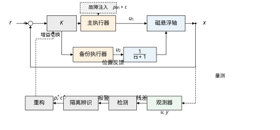
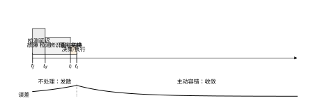
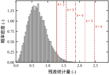
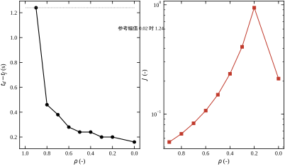
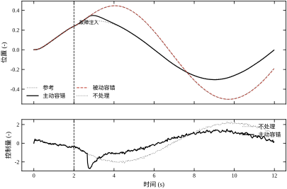
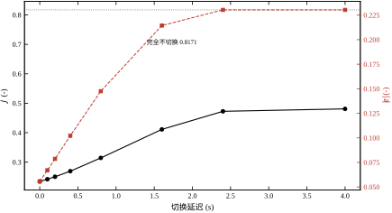
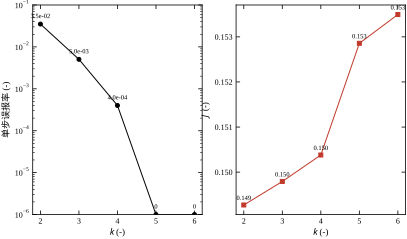
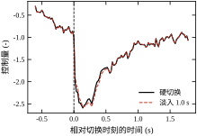
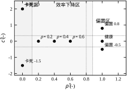
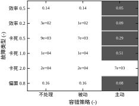

前面的章节里，控制器面对的对象大多是“自己不跑”的：给它一个扰它才动，把控制器关掉它顶多停在原地。本章的对象不是这样。取一台单轴磁悬浮平台，只保留竖直方向一个自由度，用上下两个电磁铁把一根导磁轴悬浮在中间。在工作点附近线性化之后，它的运动方程可以写成
\dot x_1=x_2,\qquad \dot x_2=\omega^2x_1-2\zeta\omega x_2+g_1u_1+g_2x_3,\qquad \dot x_3=\frac{u_2-x_3}{\tau} \tag{78-1}
其中 x_1 是轴相对工作点的位移，x_2 是速度，x_3 是备份执行器的内部状态，u_1 是主执行器（工作线圈的电流指令），u_2 是备份执行器（辅助线圈）的指令。参数取 \omega=1.2 rad/s、\zeta=0.15、g_1=1.0、g_2=0.6、\tau=0.15 s，采样周期 T_s=0.02 s，两路输入限幅 |u_1|\le 5、|u_2|\le 6。
请注意式 (78-1) 里 x_1 前面的符号：+\omega^2，不是 -\omega^2。这是磁悬浮与弹簧-质量系统最根本的差别——电磁吸力随气隙减小而增大，负刚度。线性化之后，开环极点是 +1.033、-1.393 与 -6.667，三个都在实轴上，其中第一个落在右半平面。这意味着没有控制器时，任何微小偏移都会纯指数地涨上去：时间常数 1/1.033\approx0.97 s，每过 0.97 s 偏差就涨到 e 倍，2.5 s 涨 13 倍，几秒之内轴就吸死到一侧。
同一个符号也决定了本章的全部困难。对一个开环稳定的对象，执行器失效只是“控制变差”；对一个本质不稳定的对象，执行器失效是“系统发散”。第 44 章与第 106 章里的 PID 整定、第 58 章与第 80 章里的模型预测控制，讨论的都是“怎样把性能做好”；本章讨论的是更前置的一件事：当控制器赖以出力的那个部件坏了，闭环还能不能活着。
控制任务是跟踪一条正弦参考
r(t)=A_r\left(1-e^{-t/T_r}\right)\sin\frac{2\pi t}{T_p} \tag{78-2}
幅值 A_r=0.30、周期 T_p=12 s、起幅包络时间常数 T_r=0.8 s。包络的作用是让 t=0 处的参考导数从零开始，避免前馈项在第一步就给出一个跳变。仿真总长 12 s（600 步），故障在 t_f=2.0 s 注入。
“故障”不是一个抽象名词，它在硬件上有明确的来源。本章只考虑主执行器通道的三类故障，因为它们覆盖了电磁执行机构最常见的失效形态：
效率下降。线圈局部匝间短路、功放管开通电阻变大、供电电压跌落，都会让同一句电流指令产生更小的实际电流。设实际作用量是指令的 \rho 倍，\rho\in[0,1)。\rho=1 表示健康，\rho=0 表示完全失效。
卡死。功率管击穿短路、驱动级被保护电路钳位、D/A 输出保持在上一次的值，都会让线圈电流不再受指令控制，而是停在一个常值 c 上。这时无论控制器怎么喊，实际作用量都是 c。
偏置。电流传感器的零点漂移、前级运放的失调电压、PWM 占空比的系统性偏差，会让实际电流比指令多出一个常数 c。通道仍然是“可控”的，只是控制器的每一句话都被翻译错了一点。
三类故障可以写成一个统一的式子：
u_1^{\mathrm{eff}}=\rho u_1+c,\qquad (\rho,c)\in\{(\rho,0)\}\cup\{(0,c)\}\cup\{(1,c)\} \tag{78-3}
效率下降是 \rho<1、c=0 的那一支；卡死是 \rho=0、c\ne0 的那一支；偏置是 \rho=1、c\ne0 的那一支。把它们塞进同一个参数对 (\rho,c)，后面就可以用同一套辨识算法去估计，而不必先猜是哪种故障。
这个统一写法有一个直接的好处：故障诊断变成了参数估计。观测器给出残差，残差里含着 (\rho,c) 的信息，用一段数据做最小二乘就能把这两个数估出来，估出来之后再按数值大小分类。本章第 78.7 节会看到，三条分类边界 0.12、0.88、0.35 都是从物理意义出发定的，不是拍脑袋。
面对故障，工程上有三条路，代价依次上升。
第一条是不处理。控制器照常工作，假装什么都没发生。这在开环稳定的对象上勉强可以接受——性能退化，但系统还在。在本章的平台上不行。取 \rho=0.4（主执行器只剩四成力气），12 s 的闭环代价是
J=\int_0^{12}\left(e^2+0.1x_2^2+0.02u_1^2+0.02u_2^2\right)\mathrm{d}t=0.8115 \tag{78-4}
而健康时的同一个指标是 0.0473，差了 17 倍。故障后位置误差的峰值是 0.2481，末段均方根误差 2.32\times10^{-1}——注意这不是“收敛得慢”，而是根本没有收敛：误差在末段仍然和故障刚发生时一样大。原因很简单，控制器以为自己给出了 u_1，实际只得到 0.4u_1，它按缺省四成的力气去算平衡点，稳态必然偏。
如果 \rho 再小一点，事情就不是“偏”而是“飞”了。\rho=0 时，不处理的闭环代价是 8.63\times10^{6}，位置峰值 3970，末段均方根 1.96\times10^{3}，轨迹已经彻底发散。
第二条是被动容错。既然最坏情况是效率掉到某个下限，那就干脆按那个下限设计一套固定增益，全工况不切换。取最坏效率 \rho=0.5，用有效输入矩阵
\boldsymbol B_{\mathrm{pass}}=\begin{bmatrix}0.5\boldsymbol b_1 & \boldsymbol b_2\end{bmatrix} \tag{78-5}
重算一次 LQR，得到
\boldsymbol K_{\mathrm{pass}}=\begin{bmatrix} 85.729 & 31.309 & 0.2946\\ 4.3685 & 1.6605 & 4.7476 \end{bmatrix} \tag{78-6}
而标称增益是
\boldsymbol K_0=\begin{bmatrix} 72.6904 & 25.1846 & 0.2216\\ 1.5263 & 0.5577 & 4.7365 \end{bmatrix} \tag{78-7}
对比两套增益，被动容错的思路一目了然：主通道的第一行增益从 72.69 抬到 85.73，抬高约 18%，用“平时多使劲”来换取“坏的时候还够用”。
这条路的问题也在数字里：\rho=0.4 时，被动容错的代价是 0.8104，与不处理的 0.8115 几乎一模一样。道理不难想：按 \rho=0.5 设计的增益，在 \rho=0.4 时仍然欠 20% 的力，稳态误差照旧存在；而在健康工况下，它又多使了 18% 的力，白付了控制能量。被动容错把最坏情况当成常态来设计，代价是全程都在为未必发生的故障买单，而且一旦实际故障比预设的更严重，它一样救不了。
第三条是主动容错。让系统自己发现“我不对劲”，判断是哪种不对劲，然后换一套对应的控制律。同一次 \rho=0.4 的故障，主动容错的闭环代价是 0.2344，故障后峰值 0.0558，末段均方根 2.28\times10^{-3}——比不处理低了 3.5 倍，末段误差低了两个数量级。\rho=0 时差距更悬殊：不处理与被动容错分别发散到 8.63\times10^{6} 与 4.30\times10^{6}，主动容错是 0.2151，位置峰值只有 0.1647，稳稳地活了下来。
三者放在一起，关系的轮廓就出来了：
| 方案 | \rho=0.4 的 J | \rho=0 的 J | 末段误差（\rho=0.4） | 是否发散（\rho=0） |
|---|---|---|---|---|
| 不处理 | 0.8115 | 8.63\times10^{6} | 2.32\times10^{-1} | 是 |
| 被动容错 | 0.8104 | 4.30\times10^{6} | 2.36\times10^{-1} | 是 |
| 主动容错 | 0.2344 | 0.2151 | 2.28\times10^{-3} | 否 |
| 健康基准 | 0.0473 | — | 1.60\times10^{-3} | — |
这张表就是本章要解释的全部内容。为什么主动容错能把误差压回 10^{-3} 量级？因为它做了三件事，而这三件事每一件都有代价：检测要时间，辨识要数据，重构要一套能落地的切换逻辑。任何一环没做好，主动容错就会退化成“和不处理差不多”，甚至更糟——切换瞬间的冲击可能把本来还能维持的系统推出发散边界。
主动容错的骨架可以用三个时刻切开。设故障发生在 t_f，检测算法在 t_d 时刻报警，隔离算法在 t_i 时刻给出故障参数，控制律在 t_s 时刻完成切换。三段分别是：
图 78-1 画出了这套结构。上面一行是物理回路：参考 r 进求和点，经增益 \boldsymbol K 产生两路指令，主执行器出力经故障环节（虚线块）后进入磁悬浮轴，备份执行器经一阶惯性环节 \frac{1}{\tau s+1} 后也进入同一根轴。下面一行是容错支路：观测器拿 u 与 y 算出残差，检测模块判断“是否超阈”，隔离模块估计 (\hat\rho,\hat c)，重构模块算出新增益，再用虚线把新增益送回 \boldsymbol K。

这张图里有两处容易被忽略、但在工程上决定成败的细节。
第一处是观测器的输入必须与对象的实际作用量一致。图里观测器的输入标着 u,\ y，这个 u 不是控制器算出来的指令，而是执行器真正作用到对象上的量。故障前两者相同，故障后就分叉了：效率下降时真实作用量是 \rho u_1，卡死时是 c，偏置时是 u_1+c。如果观测器仍然用指令 u_1 推进，它就是在用一个错的模型去解释一个对的测量，残差会一直很大，检测会一直报警，而重构后的控制律会建立在一个错误的估计上。本章的仿真里，这一条曾经让主动容错的效果从“降低 3 倍代价”退化到“几乎没有改善”，修正之后才恢复正常。
第二处是备份执行器不是免费的。它有自己的惯性（时间常数 \tau=0.15 s，相当于 7.5 个采样周期）和自己的限幅（|u_2|\le6）。这两条限制了它能顶多少事。第 78.2 节末尾会给出一个只用两个数就能算清楚的判据：故障占去多少权限，剩下多少权限还够不够镇定这个本质不稳定的对象。这个判据解释了为什么本章的注入测试里，“卡死 2.0”这一行连主动容错也过不去，而“卡死 1.0”能过。
后面的内容按“原理—设计—实现—评估—落地”展开。
第 78.2 节把上面的直观说法写成公式：对象、故障、观测器、残差、检测统计量、辨识方程、重构增益，以及那个决定“救不救得回来”的权限判据。第 78.3 节给出一套可以照做的设计步骤，七步，每步都有明确的输入输出。第 78.4 节与第 78.5 节分别讨论连续时间与离散时间的实现，重点在两者在残差统计特性与阈值标定上的差别。第 78.6 节用极点、代价、峰值、末段误差四组指标回答“容错之后系统到底稳不稳、性能剩多少”。第 78.7 节逐个解释参数的意义——阈值系数 k、滑动平均窗长、辨识窗长、切换延迟、淡入时间、再分配权重——并说明每一个参数拧大拧小会发生什么。第 78.8 节给调参经验，包括本章实测的阈值扫描与故障幅值扫描。第 78.9 节讨论优化方向，第 78.10 节讲工程落地（故障注入测试、冗余配置、切换瞬态），第 78.11 节讲适用边界，第 78.12 节给出完整可运行的代码。
读这一章时请始终记住一个对照关系：容错的收益是“故障后还能活”，容错的成本是“健康时多付的检测开销与切换风险”。第 78.7 节与第 78.8 节的每一个参数，都是在这两者之间挪动位置。
把式 (78-1) 写成状态空间形式，\boldsymbol x=[x_1,x_2,x_3]^{\mathsf T}，\boldsymbol u=[u_1,u_2]^{\mathsf T}：
\dot{\boldsymbol x}=\boldsymbol A_c\boldsymbol x+\boldsymbol B_c\boldsymbol u,\qquad \boldsymbol A_c=\begin{bmatrix} 0 & 1 & 0\\ \omega^2 & -2\zeta\omega & g_2\\ 0 & 0 & -1/\tau \end{bmatrix},\qquad \boldsymbol B_c=\begin{bmatrix} 0 & 0\\ g_1 & 0\\ 0 & 1/\tau \end{bmatrix} \tag{78-8}
控制器以 T_s=0.02 s 周期运行，输入在一个周期内保持不变，所以用零阶保持器离散化。标准做法是把矩阵指数作用在增广矩阵上：
\exp\left(\begin{bmatrix}\boldsymbol A_c & \boldsymbol B_c\\ \boldsymbol 0 & \boldsymbol 0\end{bmatrix}T_s\right) =\begin{bmatrix}\boldsymbol A & \boldsymbol B\\ \boldsymbol 0 & \boldsymbol I\end{bmatrix} \tag{78-9}
于是对象模型变为
\boldsymbol x_{k+1}=\boldsymbol A\boldsymbol x_k+\boldsymbol B\boldsymbol u_k,\qquad \boldsymbol B=\begin{bmatrix}\boldsymbol b_1 & \boldsymbol b_2\end{bmatrix} \tag{78-10}
这一步在第 5 章与第 20 章已经反复用过，这里只强调一个与容错有关的细节：离散化把连续时间的“通道”变成了离散时间的“列”。主执行器对应 \boldsymbol B 的第一列 \boldsymbol b_1，备份执行器对应第二列 \boldsymbol b_2。后面所有的故障辨识、权限分析、增益重构，都是在这两列上做文章。
\boldsymbol b_1 与 \boldsymbol b_2 的形状值得看一眼：\boldsymbol b_1 只有第二个分量非零（力直接作用在速度上），\boldsymbol b_2 的第一个分量为零、第二个分量是 \tau 的一阶惯性响应折算过来的小量、第三个分量非零。也就是说，主执行器是“直连”的，备份执行器是“绕道”的。直连通道坏了，绕道通道能不能顶上，取决于它的带宽与权限，这两件事第 78.2.7 节会算清楚。
把式 (78-3) 代入式 (78-10)，故障后的对象是
\boldsymbol x_{k+1}=\boldsymbol A\boldsymbol x_k+\boldsymbol b_1\left(\rho u_{1,k}+c\right)+\boldsymbol b_2u_{2,k} \tag{78-11}
控制器仍然按标称模型计算，认为作用量是 \boldsymbol b_1u_{1,k}+\boldsymbol b_2u_{2,k}。两者之差是一个只沿 \boldsymbol b_1 方向的输入偏差：
\Delta\boldsymbol u_k=\boldsymbol b_1\left[(\rho-1)u_{1,k}+c\right] \tag{78-12}
式 (78-12) 是本章所有检测与辨识的出发点。它说明三件事。
第一，故障在状态方程里表现为“沿 \boldsymbol b_1 方向的未知输入”，而不是“状态矩阵变了”。这个区别很重要：状态矩阵变了会改变系统的稳定性结构，所有极点一起漂移；输入偏差只是在原有动力学上叠加一个推动项，系统的“性格”没变，只是被推着走。
第二，偏差的大小依赖 u_{1,k}。效率下降时偏差正比于当前指令，控制器出力越大、偏差越大；卡死时偏差是 c-\rho u_{1,k} 里的常数项占主导；偏置时偏差是常数 c。这就是为什么辨识要在 \boldsymbol b_1 方向上对 (u_1,1) 两列做回归——一个回归量是“随指令变化的部分”，另一个是“不随指令变化的部分”。
第三，偏差的方向固定、幅值未知。方向固定意味着只要 \boldsymbol b_1 与输出矩阵的零空间不重合，偏差就一定会体现在测量上，这是可检测性的几何基础；幅值未知意味着必须用数据估计，这是辨识存在的理由。
检测需要一个“应当是什么”的参照。本章用 Luenberger 观测器（对偶地也可看作稳态卡尔曼滤波器），其形式为
\hat{\boldsymbol x}_{k+1}=\boldsymbol A\hat{\boldsymbol x}_k+\boldsymbol B\boldsymbol u_k^{\mathrm{obs}}+\boldsymbol L\left(\boldsymbol y_k-\hat{\boldsymbol x}_k\right) \tag{78-13}
三个状态全部可测（位置由位移传感器、速度由差分或速度传感器、备份执行器内部状态由电流环给出），所以 \boldsymbol C=\boldsymbol I。观测器增益 \boldsymbol L 由对偶 Riccati 方程解出，取过程噪声 \mathrm{diag}(10^{-8},10^{-6},10^{-6})、量测噪声 \mathrm{diag}(\sigma_1^2,\sigma_2^2,\sigma_3^2)，三个通道的噪声标准差取 \sigma=[5\times10^{-3},2\times10^{-2},1\times10^{-2}]。解出的增益是
\boldsymbol L=\begin{bmatrix} 0.0636 & 0.0073 & 0.0001\\ 0.1170 & 0.0372 & 0.0017\\ 0.0003 & 0.0004 & 0.0367 \end{bmatrix} \tag{78-14}
矩阵的非对角元很小，说明三个通道的估计基本解耦：位置残差主要修位置估计，速度残差主要修速度估计，第三通道自己修自己。这一点在实现上很省事，但在故障时会带来一个副作用——故障引起的残差主要落在第二行，因为 \boldsymbol b_1 的力作用在速度上。第 78.7 节的归一化就是为这件事准备的。
定义残差
\boldsymbol r_k=\boldsymbol y_k-\hat{\boldsymbol x}_k \tag{78-15}
把式 (78-11) 与式 (78-13) 相减，并注意 \boldsymbol y_k=\boldsymbol x_k+\boldsymbol v_k，得到残差的递推
\boldsymbol r_{k+1}=\left(\boldsymbol A-\boldsymbol L\right)\boldsymbol r_k+\boldsymbol b_1\left[(\rho-1)u_{1,k}+c\right]-\boldsymbol L\boldsymbol v_k+\boldsymbol v_{k+1} \tag{78-16}
式 (78-16) 是本章的核心方程。它把残差分成了三部分：衰减的记忆 (\boldsymbol A-\boldsymbol L)\boldsymbol r_k、故障的驱动 \boldsymbol b_1[\cdot]、噪声的驱动 -\boldsymbol L\boldsymbol v_k+\boldsymbol v_{k+1}。检测要做的，就是在噪声驱动的那一项之上，把故障驱动的那一项认出来。
健康时 \rho=1、c=0，方括号里为零，残差只剩噪声项。故障后方括号非零，残差被“顶”起来，顶起来的幅度与 \boldsymbol b_1 以及 (\rho-1)u_1+c 成正比。这就解释了一个在第 78.8 节会反复出现的现象：故障越轻、指令越小，残差越接近噪声，检测越慢。\rho=0.9 时检测要 1.24 s，\rho=0.4 时只要 0.24 s，差别不在算法，在信噪比。
残差是三维向量，三个通道的噪声标准差差了 4 倍（5\times10^{-3} 对 2\times10^{-2}）。如果直接取欧氏范数，噪声大的通道会主导统计量，等于把另外两个通道的信息浪费掉。所以先逐通道归一化：
\tilde{\boldsymbol r}_k=\mathrm{diag}^{-1}(\boldsymbol\sigma)\,\boldsymbol r_k
再做 w 点因果滑动平均，压掉高频噪声，最后取范数作为检测统计量：
S_k=\left\|\frac{1}{w}\sum_{i=0}^{w-1}\tilde{\boldsymbol r}_{k-i}\right\|_2,\qquad w=5 \tag{78-17}
滑动平均的窗长 w=5 对应 0.1 s。选 5 而不是 20，理由是平均会引入延迟：w 点平均的等效群延迟是 (w-1)/2 步，w=5 时是 2 步（0.04 s），w=20 时是 9.5 步（0.19 s）。在本质不稳定对象上，检测延迟直接换算成故障后的峰值，所以这里的取舍偏向“少平均、快响应”，把噪声抑制的活儿交给阈值。
阈值按健康统计量的均值与标准差设定：
\theta=\mu_S+k\,\sigma_S \tag{78-18}
其中 \mu_S 与 \sigma_S 由健康数据标定，k 是阈值系数。本章实测 30 组健康轨迹、每组取后 500 步，得到 \mu_S=0.6860、\sigma_S=0.2966。按式 (78-18) 算出的阈值与对应的单步误报率是：
| k | 阈值 \theta | 单步误报率 | 每 500 步期望误报次数 |
|---|---|---|---|
| 2 | 1.2791 | 0.03627 | 18.1 |
| 3 | 1.5756 | 0.00560 | 2.8 |
| 4 | 1.8722 | 0.00047 | 0.24 |
| 5 | 2.1688 | 0.00000 | 0 |
| 6 | 2.4653 | 0.00000 | 0 |
这张表是后面所有讨论的基准。k=2 时每 500 步会误报 18 次，系统基本上一直在“报警—复位—再报警”之间抖动；k=4 时 500 步里期望误报 0.24 次，折算到 12 s 的仿真长度上是“多数情况下不误报”；k=5 与 k=6 在 15000 个健康样本里一次都没误报。本章默认取 k=4，阈值 \theta=1.8722。
把阈值与信噪比放在一起看，就得到本章的第一个工程结论：误报率与检测延迟是一根绳子的两端。k 从 4 降到 2，误报率涨 77 倍，检测延迟只从 0.20 s 缩到 0.16 s；k 从 4 升到 6，误报率归零，检测延迟从 0.20 s 涨到 0.30 s。第 78.8 节会用闭环代价把这条曲线算完，结论是 k\in[3,5] 之间代价几乎不变，两端才明显变坏。
式 (78-16) 里故障项是 \boldsymbol b_1[(\rho-1)u_1+c]。如果 \boldsymbol b_1 恰好落在 (\boldsymbol A-\boldsymbol L) 的某个不变子空间里，残差就可能沿着“看不见”的方向增长，检测会失效。本章的 \boldsymbol b_1 与 \boldsymbol C=\boldsymbol I 保证了这一点不会发生——三状态全测时，任何非零输入偏差都会立刻在残差里出现。
但“能看见”与“能分辨”是两件事。要同时估出 \rho 与 c，需要一个持续的激励条件。把式 (78-16) 的故障项写成参数形式：
\boldsymbol b_1\left[(\rho-1)u_{1,k}+c\right]=\boldsymbol b_1\begin{bmatrix}u_{1,k} & 1\end{bmatrix}\begin{bmatrix}\rho-1\\ c\end{bmatrix} \tag{78-19}
两个未知数、一个方程，单步无解。把 N 步叠起来：
\begin{bmatrix}\boldsymbol b_1u_{1,k_0}\\ \vdots\\ \boldsymbol b_1u_{1,k_0+N-1}\end{bmatrix} \begin{bmatrix}\rho-1\\ c\end{bmatrix} =\begin{bmatrix}\boldsymbol d_{k_0}\\ \vdots\\ \boldsymbol d_{k_0+N-1}\end{bmatrix}
其中 \boldsymbol d_k=\boldsymbol x_{k+1}-\boldsymbol A\boldsymbol x_k-\boldsymbol b_2u_{2,k} 是“用标称模型算出来的残差”。可辨识的条件是回归矩阵满秩，也就是在这段窗口里 u_1 必须有变化：
\sum_{k=k_0}^{k_0+N-1}\left(u_{1,k}-\bar u_1\right)^2>0 \tag{78-20}
这一条看起来是废话，工程上却经常踩。如果故障恰好发生在参考信号过零点附近、控制器输出几乎不变，那么 u_1 在窗口里近似常数，\rho 与 c 就无法分离——一组 (\rho,c) 和另一组 (\rho',c') 可以给出同样的残差。本章的实测给出了这个现象的量化版本：\rho=0.4 时正常参考幅值 0.30 下检测延迟 0.24 s，把参考幅值压到 0.02（激励几乎消失）后，检测延迟变成 1.24 s，是原来的 5 倍多。
这就是“故障诊断依赖激励”的确切含义：不是算法不够好，是数据里没有信息。工程上的对策有两个，一是保证运行轨迹有足够丰富的频率成分（第 78.9 节会提到注入探测信号），二是承认“激励不足时只能等”，并在等待期间用保守策略兜住。
检测到故障后，系统在 [t_d,t_d+T_{\mathrm{est}}] 这段时间里采集数据，做参数辨识。辨识窗必须整段落在故障之后，这一点是硬约束——如果窗口跨过故障时刻，前半段是健康数据、后半段是故障数据，最小二乘会把两者平均，估出来的 \hat\rho 偏向 1，\hat c 偏向 0，故障被判成“健康”。
把式 (78-19) 沿 \boldsymbol b_1 方向投影，得到一个标量回归：
y_k=\rho\,u_{1,k}+c+\varepsilon_k,\qquad y_k=\frac{\boldsymbol b_1^{\mathsf T}\left(\boldsymbol x_{k+1}-\boldsymbol A\boldsymbol x_k-\boldsymbol b_2u_{2,k}\right)}{\boldsymbol b_1^{\mathsf T}\boldsymbol b_1} \tag{78-21}
投影的作用是把三维的方程压成一维：既然故障只沿 \boldsymbol b_1 一个方向作用，那就只看那个方向上的分量，其余方向上是模型误差与噪声，投影掉反而更干净。\varepsilon_k 里包含量测噪声与离散化误差。
对 N 个样本，最小二乘的解是
\begin{bmatrix}\hat\rho\\ \hat c\end{bmatrix} =\left(\boldsymbol\Phi^{\mathsf T}\boldsymbol\Phi\right)^{-1}\boldsymbol\Phi^{\mathsf T}\boldsymbol y,\qquad \boldsymbol\Phi=\begin{bmatrix}u_{1,k_0} & 1\\ \vdots & \vdots\\ u_{1,k_0+N-1} & 1\end{bmatrix} \tag{78-22}
\boldsymbol\Phi^{\mathsf T}\boldsymbol\Phi 的条件数直接反映辨识问题的病态程度。本章的实现里对它做了一次检查：条件数超过 10^{8} 就放弃本次辨识、保持原控制律不变——这是一个必要的保护，因为病态时解出的 \hat\rho 可能落在 [0,1] 之外，按它重构会得到一套荒谬的增益。正常情况下条件数远小于这个门限，实测 7 类故障都能把 (\rho,c) 估到三位小数：\rho=0.6 估成 0.600、0.4 估成 0.400、0.2 估成 0.200，卡死 c=2.0 估成 \hat\rho=0.000、\hat c=+2.000，卡死 c=-1.5 估成 \hat c=-1.500，偏置 c=0.8 估成 \hat\rho=1.000、\hat c=+0.800，偏置 c=-0.5 估成 \hat c=-0.500。健康时估成 \hat\rho=1.000、\hat c=+0.000，与真值一致。
辨识精度这么高，原因不难理解：式 (78-21) 是一个线性回归，噪声是零均值的高斯白噪声，N=20 个样本足以把两个参数估到 10^{-3} 量级。主动容错真正的难点不在辨识精度，而在辨识所花的时间。N=20 对应 0.4 s，在这 0.4 s 里系统是带着故障、用着旧增益在跑的，本质不稳定的对象每多跑一步，偏差就多积累一点。第 78.3 节把这段时间称为“隔离窗”，第 78.7 节会看到它如何决定“救得回来”与“救不回来”的分界。
辨识出 (\hat\rho,\hat c) 之后，重构分三种情况。
效率下降。主通道还有 \hat\rho 的力气，只是变小了。最直接的做法是把有效输入矩阵改成
\boldsymbol B_{\mathrm{eff}}=\begin{bmatrix}\hat\rho\,\boldsymbol b_1 & \boldsymbol b_2\end{bmatrix} \tag{78-23}
然后按同一组权重重算 LQR：
\hat{\boldsymbol K}=\mathrm{dlqr}\left(\boldsymbol A,\boldsymbol B_{\mathrm{eff}},\boldsymbol Q,\boldsymbol R\right) \tag{78-24}
本章取 \boldsymbol Q=\mathrm{diag}(100,10,1)、\boldsymbol R=\mathrm{diag}(0.01,0.01)。\hat\rho 越小，\boldsymbol B_{\mathrm{eff}} 的第一列越“虚”，LQR 会自动把更多权重压到第二列上，同时把第一列的增益抬高以补偿。\hat\rho=0.4 时，重算出的增益与标称增益相比，第一行明显变大——这正是“力气小了就多喊几声”的数学表达。
卡死。主通道完全不受控，\hat\rho=0，\boldsymbol B_{\mathrm{eff}} 的第一列几乎为零。这时如果仍用两输入 LQR，会得到一个第一行极大、第二行也不合理的增益矩阵，因为算法在试图用一个不存在的通道去镇定系统。正确的做法是把主通道整行置零，只对备份通道做单输入 LQR：
\hat{\boldsymbol K}=\begin{bmatrix}\boldsymbol 0\\ \boldsymbol k_2^{\mathsf T}\end{bmatrix},\qquad \boldsymbol k_2=\mathrm{dlqr}\left(\boldsymbol A,\boldsymbol b_2,\boldsymbol Q,R_{\mathrm{back}}\right) \tag{78-25}
R_{\mathrm{back}} 是备份通道的控力权重，本章取 0.1。这个值比标称的 0.01 大一个数量级，原因有两个：备份通道经过一阶惯性，带宽低，高增益只会带来饱和与振荡；备份通道的权限本来就紧张，必须省着用。
与“整行置零”配套的还有前馈项的改写。主通道卡死在 c 上，这个 c 是一个持续的力，必须由备份通道抵消。稳态时 x_2=0、\dot x_2=0，从式 (78-1) 得到备份执行器应处的平衡点
x_{3,\mathrm{eq}}=-\frac{\omega^2r-2\zeta\omega\dot r+g_1\hat c}{g_2} \tag{78-26}
注意分子里的三项：位置项、速度项、以及卡死常值项。前两项在健康时也有（它们是跟踪正弦所需的稳态力），第三项是故障额外加进来的。c=2.0 时，x_{3,\mathrm{eq}} 的典型值在 -3.3 附近——这已经用掉了备份执行器限幅 6 的一半以上，第 78.2.8 节会说明这意味着什么。
偏置。主通道仍然可控，只是每一句指令都被加了一个常数。这种情况下不需要换增益（\hat\rho\approx1，\hat{\boldsymbol K} 与 \boldsymbol K_0 几乎相同），只需要在指令上把这个常数减掉：
u_1=\frac{-\left(\omega^2r-2\zeta\omega\dot r\right)}{g_1\hat\rho}-\hat c-\boldsymbol K[0,:]\,\boldsymbol e \tag{78-27}
式 (78-27) 里的 -\hat c 就是“前馈补偿”：既然执行器会多加 c，那就先少给 c。这一项看起来简单，效果却很明显：偏置 0.8 时，不处理的故障后峰值是 0.160，主动容错是 0.083，压掉近一半；而如果错把偏置当成卡死处理（把 u_1 整行置零），备份通道要独自承担全部稳态力，故障后峰值会冲到 0.294 以上，反而更差。
三种情况对应三套动作，这个对应关系必须在代码里写清楚。本章的实现用一个三态标志（正常、效率下降、卡死、偏置）来区分，第 78.12 节会给出完整代码。
前面所有推导都假设“只要估得准、切得快，就能救回来”。这个假设有边界，边界由权限决定。
备份执行器能提供的最大稳态力是
F_{\max}=g_2U_{2,\max}=0.6\times6=3.6 \tag{78-28}
卡死故障会占去 g_1|c|=|c| 的力（本章 g_1=1）。剩下的可用力是
F_{\mathrm{rem}}=F_{\max}-g_1|c|=3.6-|c| \tag{78-29}
而对象是本质不稳定的，要把偏差 x_1 拉住，至少需要抵抗不稳定项 \omega^2x_1=1.44x_1。于是“在偏差发展到多大之前必须完成切换”的条件是
1.44\left|x_1\right|<3.6-|c| \quad\Longrightarrow\quad \left|x_1\right|<\frac{3.6-|c|}{1.44} \tag{78-30}
按式 (78-30) 算三个数：c=0.5 时边界是 2.15，c=1.0 时是 1.81，c=2.0 时是 1.11。这三条边界解释了第 78.10 节注入矩阵里的全部现象。
c=0.5 与 c=1.0 时，边界分别 2.15 与 1.81，远大于切换时刻的实际偏差（本章实测主动容错的故障后峰值分别是 0.294 与 0.507），所以救得回来。c=2.0 时边界只有 1.11，而备份通道还需要 0.4 s 的辨识窗才能拿到 \hat c，在这 0.4 s 里偏差已经越过边界，此后无论怎么切都拉不回来——实测主动容错的故障后峰值是 6598.832，与不处理的 24131.973 同属发散，只是慢一点。
式 (78-30) 的价值在于它把“能不能容错”从一句定性判断变成了一个可以提前算的数。设计阶段拿到执行器限幅与故障谱，就可以算出哪些故障在能力范围内、哪些必须靠“预防”而不是“容错”来解决。第 78.10 节会把这条判据写进故障注入测试的判读规则里。
为了横向比较不同方案，本章用一个与控制器权重解耦的二次代价：
J=\int_0^{t_f}\left(e^2+0.1x_2^2+0.02u_1^2+0.02u_2^2\right)\mathrm{d}t,\qquad e=x_1-r \tag{78-31}
注意控制器的权重是 \boldsymbol Q=\mathrm{diag}(100,10,1)、\boldsymbol R=\mathrm{diag}(0.01,0.01)，与式 (78-31) 的系数不同。这是有意为之：控制器按自己的权重设计，评价按另一套权重打分，否则“用 A 的标准评价 A”会天然偏向 A，比较失去意义。式 (78-31) 里位置误差的权重是 1，速度权重 0.1，两路控制量权重都是 0.02，反映的是“跟踪精度优先、能量次要”的工程偏好。
除了 J，本章还统计三个指标：故障后峰值 \max|e|（考核瞬态冲击与机械间隙）、故障后前 150 步的均方根（考核恢复过程）、末 100 步的均方根（考核稳态）。四个指标各有各的用途，第 78.6 节会看到它们有时给出不一致的排序——某个方案峰值最小但恢复最慢，另一个方案反之。这种不一致不是数据有问题，而是“容错”本身就是多目标问题。
三项权重与三项状态并不一一对应，这一点容易误读。式 (78-31) 的积分里有四项：位置误差、速度、u_1、u_2。它在离散实现里对应 \boldsymbol Q_{\mathrm{cost}}=\mathrm{diag}(1,0.1,0) 与 \boldsymbol R_{\mathrm{cost}}=[0.02,0.02]。第三项的状态权重是 0，也就是备份执行器的内部状态 x_3 不进代价。这不是漏写。x_3 是执行器的内部变量，不是工艺量，它偏大偏小本身不构成“性能差”；它的影响已经通过 g_2x_3 体现在速度与位置上了，再计一次等于重复惩罚。更实际的原因是：如果把 x_3 计进代价，那么“多用备份通道”这个动作本身就会被扣分，容错方案会被系统性地判差——而这恰恰是容错控制要鼓励的动作。
两路控制量的权重相同，也是有意的。\boldsymbol R_{\mathrm{cost}} 的两个分量都是 0.02，不因为备份通道“平时不用”就给它更小的权重。原因是评价要回答的问题是“这套方案总共花了多少执行器代价”，而不是“这套方案是否公平地使用了两个执行器”。如果给备份通道更低的权重，主动容错会因为“它敢用备份通道”而自动占便宜，横比就失去意义。评价函数的中立性，比评价函数的精细度更重要。
位置误差用 e 而不是 x_1。这条看似琐碎，实则决定了所有数字的量级。若用 x_1，跟踪一条幅值 0.30 的正弦，即使完美跟踪，代价里也含有 \int x_1^2\mathrm{d}t\approx0.3^2\times12/2=0.54 的“参考本身的能量”，方案之间的差异会被这个大数淹没。用 e=x_1-r 之后，健康工况的 J 只有 0.0475，故障方案是 0.81 或 0.23，差异一目了然。评价指标的偏移量选择，决定了它能不能分辨差异，这是所有横比实验都要先解决的事。
把前面的公式串起来，一套主动容错控制器可以按七步做出来。每一步都有明确的输入与输出，做完一步就能验证一步，不必等到最后才发现哪里不对。
这七步的顺序不是随意排的，而是按“依赖关系”排的：后一步用到的量必须由前一步产出。第一步给出模型与两套增益，第二步给出阈值，第三步给出“容错能力到哪为止”的判据，第四步给出“越过判据之后怎么改结构”，第五步给出“改结构需要多久”，第六步给出“怎么改才不震”，第七步给出“改完到底行不行”。任何一步想跳过，都会在后面某一步变成无法解释的数字。实际工程里最常见的失败不是算法写错，而是第二步的阈值与第五步的延迟分别按不同工况标定，最后在第七步发现故障谱中间那一段怎么调都过不了——回头一看，是两个环节的时间基准不一致。
七步的时间成本也值得先说清楚：前四步是纸面工作，不需要跑仿真；后三步必须跑闭环。所以真正决定“这套方案能不能用”的是第三步的边界算得对不对，而不是第七步的曲线漂不漂亮。第三步算错方向，第七步只会跑出一堆看起来收敛、实际靠运气的结果。
输入是对象的物理参数与采样周期，输出是离散矩阵 \boldsymbol A,\boldsymbol B、标称增益 \boldsymbol K_0 与观测器增益 \boldsymbol L。
这一步与常规状态反馈设计没有区别：按式 (78-9) 做零阶保持离散化，按 \boldsymbol Q、\boldsymbol R 解离散 Riccati 方程得到 \boldsymbol K_0，按噪声强度解对偶 Riccati 方程得到 \boldsymbol L。本章的结果是式 (78-7) 与式 (78-14)。
离散矩阵要能与物理参数对上。这不是形式检查，而是排查符号错误最有效的手段。本章的 \boldsymbol A 第一行是 [1.000287,\ 0.019930,\ 0.000115]，可以逐项用手算核对：(1,1) 元约等于 1+\omega^2T_s^2/2=1+1.44\times4\times10^{-4}/2=1.000288；(1,2) 元约等于 T_s-2\zeta\omega T_s^2/2=0.02-0.36\times4\times10^{-4}/2，落在 0.01993；(1,3) 元约等于 g_2T_s^2/2=0.6\times4\times10^{-4}/2=1.2\times10^{-4}，与 0.000115 同量级。第二行的 (2,1) 元是 \omega^2T_s=0.0288 减去阻尼修正后的 0.028699。第三行只有 (3,3) 元非零，它是 e^{-T_s/\tau}=e^{-0.1333}=0.875173——这个数一定要单独核，因为它是唯一一个由时间常数直接决定的元，符号或单位错一位就会立刻显形。
离散极点要与连续极点按 z=e^{sT_s} 对上。连续域的三个特征值是 +1.033、-1.393 与 -6.667，映射到离散域应分别是 e^{1.033\times0.02}=1.0209、e^{-1.393\times0.02}=0.9725、e^{-6.667\times0.02}=0.8752；本章实算的 \mathrm{eig}(\boldsymbol A) 是 1.020884、0.972516、0.875173，四位小数完全吻合。这一步检查的价值在于：如果离散化时把 \boldsymbol B 的增广块放错位置，\boldsymbol A 往往仍然是对的，极点检查通不出问题，但 \boldsymbol B 会错，而 \boldsymbol B 错了之后所有重构增益都会错。
两列 \boldsymbol B 的形状决定了后面所有的容错策略。本章 \boldsymbol b_1=[1.9953\times10^{-4},\ 1.9930\times10^{-2},\ 0]^{\mathsf T}，\boldsymbol b_2=[5.1510\times10^{-6},\ 7.6378\times10^{-4},\ 1.2483\times10^{-1}]^{\mathsf T}。第一列的第二分量是 1.9930\times10^{-2}，第二列的第二分量只有 7.6378\times10^{-4}，两者差 26.1 倍；第二列的第二分量与第一列的第二分量之比只有 3.8\%。这说明同一拍里主通道对加速度的作用是备份通道的二十六倍。但反过来看第三行，\boldsymbol b_2 的第三分量是 0.1248，\boldsymbol b_1 的第三分量是 0——备份通道真正的作用点不在“当拍推力”，而在“把 x_3 这个内部状态推起来”，再经 g_2=0.6 折算成力。这就解释了为什么备份通道的稳态能力反而是主通道的 72\%：稳态时 x_3 可以积累到接近 u_2，0.6\times6=3.6，而主通道被限在 1.0\times5=5.0。主通道快而直接，备份通道慢而有力，这八个字是后面每一条重构规则的物理依据。
观测器增益要检查噪声放大。本章 \boldsymbol L 的三行是 [0.0636,\ 0.0073,\ 0.0001]、[0.1170,\ 0.0372,\ 0.0017]、[0.0003,\ 0.0004,\ 0.0367]。第一列（对应位置量测）的系数最大，第二列次之，第三列最小，这与三个量测通道的噪声标准差 5\times10^{-3}、2\times10^{-2}、10^{-2} 的方向一致：噪声越小的通道，观测器越敢用。若某一列的系数与噪声水平反着来，多半是 \boldsymbol R_v 的对角元写反了。
有一个容易被忽略的检查项：标称闭环的稳定裕度。容错控制要在故障后切换到一套新增益，新增益的稳定裕度通常比标称的差（因为有效输入矩阵“变虚”了）。如果标称闭环本身只有很小的裕度，切换后几乎没有余量可用。本章标称闭环的极点是 0.9385、0.5371、0.2848，谱半径 0.9385。这个数看着离 1 不远，但换算成时间常数是 T_s/|\ln\rho_{\mathrm{cl}}|=0.02/0.0635=0.315 s，也就是说偏差每 0.315 s 衰减到 37\%，五十步（1 s）衰减到 4.2\%。对本章 12 s 的仿真时长来说，这个收敛速度够用；但如果参考信号周期只有 2 s，0.315 s 的时间常数就会显得拖沓。谱半径不是越小越好，它要与参考信号的带宽匹配，这一点在第 78.6 节会用四套增益的横比再说明一次。
输入是健康工况下的若干条轨迹，输出是 \mu_S、\sigma_S 与阈值 \theta。
这一步是整个设计中唯一“必须用数据”的环节，也是最容易做得草率的一步。需要注意三点。
其一，标定数据要覆盖工作范围。如果标定只在参考幅值 0.30 下做，而实际运行会到 0.10，那么标定出的 \sigma_S 偏大（因为大幅值下控制量大、残差大），阈值会偏高，轻故障漏报。本章的标定用 30 条不同随机种子的轨迹，参考幅值固定 0.30，与后续实验条件一致。
其二，要丢掉起始瞬态。仿真从零状态起步，前 100 步有起幅过程，残差统计量与稳态不同。本章取每条轨迹的第 100 步之后共 500 步参与统计，30 条合计 15000 个样本，得到 \mu_S=0.6860、\sigma_S=0.2966。
其三，要同时记录误报率曲线，而不只是记一个阈值。下面的 k–误报率对照表，是后面调参时判断“能不能再降一点”的依据。只记一个数，等于放弃了这条信息。
| 系数 k | 阈值 \theta | 误报步数 / 15000 | 误报率 |
|---|---|---|---|
| 2 | 1.2791 | 544 | 0.03627 |
| 3 | 1.5756 | 84 | 0.00560 |
| 4 | 1.8722 | 7 | 0.00047 |
| 5 | 2.1688 | 0 | 0 |
| 6 | 2.4653 | 0 | 0 |
这张表最值得看的是最后两行：k=5 与 k=6 的误报都是 0。但“0”不等于“不会有”，它只说明在 15000 个样本里没发生。按“零事件”的置信上限估计，15000 个样本零误报对应的误报率上界大致是 3/15000=2\times10^{-4}。所以 k 从 5 再加到 6 时，阈值从 2.1688 抬到 2.4653，抬了 13.7\%，换来的是“实际误报率可能低一点”这个无法验证的承诺——代价却是检测延迟实实在在变长（第 78.8 节实测从 0.28 s 变到 0.30 s）。在零误报区间里继续加 k 是在为统计噪声付费。
本章最终取 k=4，阈值 1.8722、误报率 0.00047。这个选择看着“不那么干净”——毕竟 k=5 能做到零误报——但零误报的代价是延迟，而延迟在本对象上是硬约束（第 78.2.8 节的权限边界只有 1.11 到 2.15）。k=4 每 2000 步大约误报一次，配合“报一次警只做一次辨识、判不通过就维持原状态”的保守逻辑，误报的实际后果是“多算了一次，什么也没改”，可以接受。阈值不是选出来的最优解，是选出来的可交付解，这条在第 78.8 节还会展开。
其四，标定集与验证集要分开。用同一批轨迹既算 \mu_S、\sigma_S 又统计误报率，得到的误报率一定偏乐观，因为阈值就是被这批数据的统计量“定制”出来的。正确做法是：用一部分种子算统计量，再用另一部分种子算误报率。本章的标定用了 30 条轨迹，误报统计在健康工况的长跑里单独做（表里的 15000 步来自标定集；第 78.6 节的方案横比用的是另一条 12 s 的轨迹，两者不重叠）。
其五，参考幅值必须与运行工况一致。残差的统计量不是对象的固有属性，它随工况走：参考幅值变了，控制量跟着变，残差的均值与方差都跟着变，同一个阈值在另一个幅值下的含义完全不同。本章有一组对比可以说明这个量级：参考幅值 0.30 时，\rho=0.9 的轻故障在这条 12 s 轨迹里一次都没能顶穿阈值；把参考幅值压到 0.02 后，同一条故障要 1.24 s 才被检出。前者不是“更灵敏”，后者也不是“更迟钝”——两者的噪声实现、起始瞬态、阈值相对残差的裕度都不同，跨幅值比较检测延迟本身就没有意义。
真正有意义的区分在故障是乘性还是加性。效率下降是乘性的，实际作用量是 \rho u_1，偏差是 (\rho-1)u_1，指令小了偏差也小；偏置与卡死是加性的，实际作用量是 u_1+c 或 c，偏差与指令无关。所以在小指令工况下，加性故障的相对可见度更高，乘性故障更低。标定集如果不覆盖运行时的幅值范围，这两类故障的检测性能就会在标定工况之外悄悄劣化，而误报率又恰好在标定工况下最好看。这条区别决定了标定集必须覆盖运行幅值范围，而不能只取一个典型值。
输出怎么验：拿一批没参与标定的健康轨迹过一遍检测器，误报率应当落在表里的区间内；再把 \rho=0.9 的轻故障注进去，若一次都检不出，说明阈值偏松或窗长太短，与第二步的 \sigma_S 估计没有关系——这一点要分清楚，否则会去反复改阈值，越改越糟。
输入是执行器限幅、故障类型清单，输出是“哪些故障在容错能力之内”的判据。
这一步用式 (78-30)。先算备份通道的最大稳态力 F_{\max}=g_2U_{2,\max}，再按故障谱里最严重的卡死值 c_{\max} 算剩余力，最后算出容许的最大偏差。三个数一摆，设计者立刻知道：本平台能容 c\le1.0 的卡死，容不了 c=2.0 的卡死。
如果算出来的边界太小、不能接受，有两条路可走：加大备份执行器的限幅或增益（硬件改动），或者缩短辨识窗（软件改动，代价是辨识方差变大）。本章的辨识窗取 0.4 s，比最初的 0.8 s 短一半，正是为了让 c=1.0 的卡死能落在边界之内——实测 0.8 s 窗下 c=1.0 的故障后峰值是 2577.838（发散），改成 0.4 s 后降到 0.507（收敛）。同一个算法、同一个故障，只改一个窗长，结果从发散变成收敛，这就是第三步的意义：在写代码之前先把边界算清楚。
这个判据是必要条件，不是充分条件。式 (78-30) 只比较了“剩余力”与“不稳定项”，隐含两个假设：备份通道能立刻出满力，以及故障发生在偏差为零的时刻。两个假设在真实系统里都不成立。
第一个假设的问题出在惯性环节。备份通道要经过 1/(\tau s+1) 才把 u_2 变成作用力，\tau=0.15 s。要在 0.15 s 内把 x_3 从 0 推到 u_2 的 63\%，前提是这期间 u_2 一直给到限幅；要在 0.45 s（三个时间常数）内推到 95\%，才能说“稳态力”真的到手。而偏差在这 0.45 s 里不是站着不动的，它按开环增长率 1.033 /s 往上走，0.45 s 涨 e^{0.465}=1.59 倍。所以式 (78-30) 解出的边界应当再除以一个 1.6 左右的安全系数才敢用。本章 c=1.0 的边界 1.81 除以 1.6 是 1.13，而实测故障后峰值 0.507 仍在 1.13 之内，说明这个保守化没有保守过头。
第二个假设的问题出在故障时刻的相位。本章的故障固定在 t=2.0 s 注入，这个时刻参考信号刚起步不久（起幅时间常数 0.8 s，t=2.0 s 时包络已到 1-e^{-2.5}=91.8\%），偏差与速度都不大。如果故障发生在参考信号的峰值附近，速度项 x_2 大，同样的 c 会推出更大的峰值。故障注入测试不能只在一个相位上做，第 78.10 节能看到，本章的注入矩阵只扫了故障幅值、没扫相位，这是本章验证工作的一个已知缺口；工程上补这个缺口不需要新算法，只需要把注入时刻从 2.0 s 改成一组分散的值重跑。
第三个容易被忽略的量是切换前的偏差是否已经在增长。式 (78-30) 给的是“偏差发展到多大之前必须完成切换”，而偏差在检测与辨识这两段时间里一直在长。本章实测的检测延迟是 0.04 到 0.30 s，辨识窗固定 0.4 s，两者相加是 0.44 到 0.70 s。按 1.033 /s 粗估，这段真空期里偏差涨 e^{0.45} 到 e^{0.72}，即 1.57 到 2.06 倍。c=1.0 时若切换瞬间偏差是 0.25，真空期末尾就是 0.51，离边界 1.81 还有三倍余量；c=2.0 时边界只有 1.11，同样的增长倍数下起点必须低于 0.54，而卡死 2.0 的故障会让偏差在检测延迟内就冲出这个范围。同样的算法、同样的窗长，c=1.0 有富余而 c=2.0 没有，差别全在这一条边界上。
输入是故障类型，输出是新增益与前馈项。
这一步对应式 (78-23) 至式 (78-27)。实现上建议做成一张表，每行一个故障类型，列出“增益怎么算、前馈怎么改、哪一路输入要置零”：
| 故障类型 | 判据 | 新增益 | 前馈/平衡点 | 输入处理 |
|---|---|---|---|---|
| 健康 | \hat\rho>0.88，\lvert\hat c\rvert\le0.35 | \boldsymbol K_0 | 标称前馈 | 两路正常 |
| 效率下降 | 0.12\le\hat\rho\le0.88 | \mathrm{dlqr}(\boldsymbol A,[\hat\rho\boldsymbol b_1,\boldsymbol b_2],\boldsymbol Q,\boldsymbol R) | 前馈除以 \hat\rho | 两路正常 |
| 卡死 | \hat\rho<0.12 | 主通道整行置零，备份通道单输入 LQR | 式 (78-26) 的 x_{3,\mathrm{eq}} | 主通道置零 |
| 偏置 | \hat\rho>0.80，\lvert\hat c\rvert>0.35 | \boldsymbol K_0 | 前馈减 \hat c | 两路正常 |
这张表里最容易被写错的是“卡死”那一行的输入处理。主通道卡死时，控制器给出的 u_1 完全不起作用，但如果不显式置零，控制律仍会算出一个很大的 u_1（因为它以为自己在出力），这个数会通过前馈项和观测器影响其他量。显式置零有两个好处：一是让控制量的记录与实际作用量一致，二是避免前馈项里的 1/\hat\rho 在 \hat\rho\to0 时爆掉。
四行分别对应四种结构，不是四组参数。健康行与偏置行的增益都是 \boldsymbol K_0，看起来像是“没做事”，但两者的前馈项不同；效率下降行的增益是重解的，控制结构没变；卡死行连输入维度都变了，是真正的结构重构。这四种情况在代码里应当走四个分支，而不是用一个带权系数的公式统一算。原因是 \hat\rho\to0 时 \boldsymbol B_{\mathrm{eff}} 的第一列趋于零矩阵，Riccati 方程的条件数发散，解出来的增益在数值上不可信；即使强行算出来，前馈项里的 1/\hat\rho 也会把控制量推到限幅之外。用“连续过渡”的方式处理从效率下降到卡死的过程，在数学上是连续化一个奇点，在工程上是给自己埋雷。
卡死那一行的具体增益值得单独看。主通道整行置零后，剩下的控制问题是单输入（只有 u_2）三状态，控制权重取 \boldsymbol R_{\mathrm{back}}=0.1——比标称的 0.01 大十倍，意思是“备份通道更贵，少用一点”。解出的增益是 \boldsymbol k_{\mathrm{back}}=[34.9505,\ 19.2561,\ 2.3382]，闭环极点是 0.6456 与 0.9581\pm0.0226j，谱半径 0.9584。这个谱半径比标称的 0.9385 更靠近单位圆，符合“能力下降后性能必然变差”的预期。值得注意的是那一对共轭极点：单输入控制三状态时，有两个模态要靠同一条通道压制，很容易出现振铃。把 0.9581\pm0.0226j 换算成连续域的阻尼比：模长 0.9584，|\ln 0.9584|=0.04249，辐角 0.0236 rad，阻尼比是 0.04249/\sqrt{0.04249^2+0.0236^2}=0.874。阻尼比 0.87 并不差，振铃不是这套增益的主要问题；卡死分支真正的问题是慢——谱半径 0.9584 对应时间常数 0.02/0.0425=0.47 s，比标称的 0.32 s 慢了近五成。图 78-6 里主动容错在卡死情形下的波形之所以显得“拖”，拖的是这个时间常数，不是阻尼。
观测器的输入也要跟着改，这是最容易漏的一步。检测器用的残差由式 (78-16) 生成，而式里的 \boldsymbol u^{\mathrm{obs}} 是“观测器以为的实际作用量”。故障发生后，它不再等于控制器给出的 \boldsymbol u：卡死时应当喂 [\hat c,\ u_2]，偏置时应当喂 [u_1+\hat c,\ u_2]，效率下降时应当喂 [\hat\rho u_1,\ u_2]。如果不改，观测器会一直用一个错误的输入做预测，残差里会残留一个与故障同量级的稳态偏移；这个偏移不会被检测逻辑重新判读（因为已经报过警了），但会污染观测器状态，让重构后的控制律基于错误的 \hat{\boldsymbol x} 出力。实测的表现是切换后偏差不收敛、缓慢爬升，看起来像“新增益不够强”，实际是状态估计偏了。
前馈项的三处修改要分清对象。效率下降是“除以 \hat\rho”，卡死是“换成平衡点 x_{3,\mathrm{eq}}”，偏置是“减 \hat c”。三者不要混用：给效率下降套平衡点公式，会把一个本来能靠主通道补回来的偏差硬塞给备份通道；给偏置套 1/\hat\rho，会在 \hat\rho\approx1 时几乎不起作用，偏置原封不动地留在系统里。本章的分类边界（\hat\rho<0.12 为卡死、\hat\rho<0.88 为效率下降、|\hat c|>0.35 且 \hat\rho>0.80 为偏置）就是为了让这四种处理互不重叠、也没有空档。
重构的频率要限制。如果每一拍都根据当前的 \hat\rho、\hat c 重解一次 Riccati 方程，计算量不说，增益会随辨识噪声抖动，闭环变成一个时变系统，稳定性分析全部失效。本章的做法是“一次辨识、一次重构、之后锁死”，除非残差再次越过阈值才重新辨识。这个“锁死”策略有代价：故障若继续恶化（效率从 0.4 掉到 0.2），系统不会自动跟进，需要二次报警触发。第 78.9 节会讨论用无扰过渡与多模型方法改进这一点，但在基础版本里，宁可漏跟一次也不要每拍都动。
输入是噪声水平与对象的不稳定程度，输出是滑动平均窗长 w、辨识窗长 N、切换延迟 d。
三个参数各管一段：w 管检测的平滑程度，N 管辨识的精度，d 管“决策到执行”的等待。三者的共同点是都在消耗时间，而时间在这个对象上是稀缺资源。
本章的取值是 w=5（0.1 s）、N=20（0.4 s）、d=0（立即执行）。d=0 不是偷懒，而是因为本章的仿真里没有计算延迟与安全联锁；实际系统中 d 至少要覆盖一次控制周期加一次通信周期，第 78.10 节会讨论。d 加大后的代价在第 78.6 节有完整的扫描：d 从 0 加到 0.8 s，闭环代价从 0.2344 涨到 0.3144；加到 2.4 s 时涨到 0.4726；加到 4.0 s 时是 0.4809，已经接近“完全不切换”的 0.8171 的一半以上。
w 的取值是“延迟与平滑”的直接兑换。w 点因果滑动平均的群延迟是 (w-1)T_s/2，w=5 时是 0.04 s；噪声标准差被压到原来的 1/\sqrt{w}=1/2.24=44.7\%。如果把 w 加到 9，群延迟变 0.08 s，噪声压到 33.3\%——多花 0.04 s 只换来噪声再降一成，而阈值可以少加一点点。这笔交易在本平台上不划算，因为 0.04 s 的延迟作用在增长率 1.033 /s 的偏差上，等于多放 4.2\% 的幅度，而噪声那一成的改善在 k=5 已经是零误报的前提下毫无意义。当误报率已经降到零，继续加窗只买到延迟。
w 还有一条下限不能破：w\ge3。w=1 等价于不平滑，残差直接与阈值比，实测 k=2 时误报率 0.03627 会进一步恶化；w=2 的群延迟只有 0.01 s，但方差只降 29\%，起不到“把噪声从故障信号里分出来”的作用。本章取 5，是在“至少三倍方差压缩”与“不超过两个控制周期的延迟”之间取的中间值。
N 是被故障谱逼出来的，不是自由参数。辨识要解的是两列最小二乘：\boldsymbol b_1 方向投影后对 (u_1,1) 两列回归，未知数两个（\rho 与 c 的可辨识组合），方程数等于窗长 N。从纯估计理论看，N 越大方差越小，N=20 与 N=40 的方差差一倍。但 N 同时在消耗权限边界里的时间预算，而 c=1.0 这条故障的预算总共只有 1.81 的偏差额度。本章最初用 N=40（0.8 s），实测 c=1.0 的故障后峰值 2577.838，完全发散；改成 N=20 后降到 0.507。N 的选择不是“精度够不够”，而是“精度换来的时间是否还在边界之内”，这一点与常规的系统辨识思路正好相反：常规辨识追求参数精度，容错辨识追求“在对象飞走之前拿到一个够用的参数”。
N 也不能太小。N=10（0.2 s）时方程数等于未知数，最小二乘退化成一个精确解，噪声被原封不动地搬进 \hat\rho 与 \hat c；具体表现是同一个故障在不同噪声实现下被判成不同类型，第 78.8 节的七类故障辨识表就不再成立。经验下限是 N\ge3 倍未知数个数，本章的未知数在两个左右，所以 N\ge6 是硬下限，N=20 留了三倍余量。
d 在仿真里取零，在实机上不可能取零。d 的物理含义是“决策算完到新增益真正生效”的等待，它至少包含三部分：控制周期（本章 0.02 s）、通信周期（现场总线上一到两拍）、安全联锁确认（通常要求连续两拍一致，再 0.04 s）。所以实机上 d 的合理下限是 0.08 s 左右，按整步取就是四到五步。对照第 78.6 节的扫描，d=0.1 s（五步）对应的代价是 0.2420，比 d=0 的 0.2344 高 3.2\%——这个代价是可以接受的。真正危险的是 d 到 1.6 s 以上（八十步，代价 0.4112）甚至 4.0 s（两百步，0.4809），后者已经是“完全不切换”的 0.8171 的 59\%，主动容错退化成了一个只是“少亏一点”的方案。d 的预算应当从“通信与联锁的真实耗时”倒推，而不是从“我想多快”正推。
三个参数之间还有一条隐性约束：w 的群延迟必须小于 d。否则检测结果还没稳定，切换动作已经执行，等于用一个抖动的判决去改结构。本章 w=5 的群延迟 0.04 s 与实机 d=0.08 s 的关系满足这条约束，但如果为了压噪声把 w 加到 9（群延迟 0.08 s），就必须把 d 同步抬到 0.10 s 以上。
输入是新增益，输出是一段可以安全执行的控制律切换。
最朴素的做法是硬切换：检测到故障、算好增益，下一拍直接换。本章实测硬切换的闭环代价 0.2329，故障后峰值 0.0541，切换瞬间 u_1 的最大跳变 1.024。
跳变 1.024 相对于 u_1 的正常幅值（健康时峰值 0.66）不算小，对执行器是一个冲击。改进的办法是淡入：在 T_b 秒内把增益从旧值线性过渡到新值，
\boldsymbol K_j=(1-\alpha_j)\boldsymbol K_{\mathrm{from}}+\alpha_j\boldsymbol K_{\mathrm{to}},\qquad \alpha_j=\min\left(1,\frac{j\,T_s}{T_b}\right) \tag{78-32}
本章实测 T_b=1.0 s 时，跳变从 1.024 降到 0.880，代价从 0.2329 涨到 0.2339——用 0.4\% 的性能换取 14\% 的冲击下降，这笔交易在多数场合是划算的。第 78.10 节会结合图 78-7 细看切换前后的波形。
淡入长度不是越长越好。本章扫了四个取值，T_b=0（硬切换）、0.2 s、0.5 s、1.0 s，对应的代价是 0.2329、0.2333、0.2337、0.2339，跳变是 1.024、0.892、0.883、0.880。这组数说明两件事。第一，代价随 T_b 单调上升，但幅度极小，从 0 到 1.0 s 只涨 0.43\%——淡入几乎不要钱。第二，跳变的下降集中在前 0.2 s：T_b=0.2 s 就吃掉了从 1.024 到 0.892 的绝大部分，再往上加只从 0.892 挪到 0.880，边际收益趋零。所以合理的取值在 0.2 到 0.5 s 之间，本章的 1.0 s 偏保守，是为了让图 78-7 的过渡段看得清楚。
跳变的机理值得说清：硬切换瞬间，新旧两套增益对同一个状态 \hat{\boldsymbol x} 给出两个不同的 u_1，差值就是跳变。这个差值与 \hat{\boldsymbol x} 成正比，而切换时刻 \hat{\boldsymbol x} 恰好因为故障而偏离标称值，所以跳变最大的时刻正是最不该有冲击的时刻。淡入把这个差值摊到 T_b 内的若干拍上，每拍的增量从 1.024 降到 1.024\times T_s/T_b 量级。这就是“用时间换冲击”最朴素的一个例子：不改变任何增益、不改变任何判据，只是把同一件事分几步做完。
不要用指数淡入。指数淡入 \alpha_j=1-e^{-jT_s/T_b} 在起点斜率最大，跳变几乎全集中在第一拍，等于把硬切换的冲击削掉一半就没了后劲；线性淡入的斜率恒定，冲击被均匀分摊。更不能用“指数趋近”，因为它永远到不了 1，控制律始终混着一点旧增益，闭环极点无法用任何一套增益的极点来界定，稳定性分析失去依据。
切换时不要重置观测器。一个很自然的想法是“既然故障变了，观测器状态也该重新初始化”。这是错的。观测器状态 \hat{\boldsymbol x} 是连续的物理量估计，它不因为执行器故障而跳变；重置它等于在控制律里人为制造一个阶跃，效果比不淡入还差。真正需要重置的只有“观测器用的输入”（见第 78.3.4 节），而那是换一个信号源，不是改状态。
多处修改要有固定顺序。一次切换涉及四件事：换增益、换前馈、改观测器输入、可能置零某一路。四件事如果在同一拍内以不同顺序执行，中间态会被记录进日志，也可能被其他逻辑读到。本章的做法是先在局部变量里算好全部新值，再一次性提交，提交的边界就是控制周期的边界。这个习惯在仿真里看不出差别，在实机上决定了日志能不能复盘。
输入是整套控制器，输出是“能不能交付”的结论。
验证至少包含三件事：故障注入测试（把故障谱里每一类故障、每一个幅值都注入一次，看闭环是否收敛）、误报统计（在健康工况下长时间跑，统计误报次数）、边界扫描（把故障幅值从 0 扫到超出权限，找到实际的可容错边界，与第三步算出的理论边界对照）。第 78.10 节会给出本章的注入矩阵，它的形状就是这三件事的合并结果。
三件事都需要一个明确的通过判据，否则“看曲线觉得还行”会变成唯一的结论。本章用的是双判据：故障后峰值 \max|e|<1.0 且末 100 步均方根 <0.05。前者管“别撞坏”，后者管“真的稳住了”。两条缺一不可，因为只卡峰值会放过“有界但不收敛”的情形，只卡末段会放过“收敛前先冲出去”的情形。实测这两种情形在本平台上都出现过：c=2.0 的卡死在主动容错下的峰值是 6598.832，两条都不过；而 \rho=0.2 的效率下降在主动容错下并没有发散，闭环代价却是 0.9359，是 \rho=0.4 时 0.2337 的四倍，属于“稳住了但精度已经掉下去”，只看“有没有发散”就会把它判成通过。
第三个判据是重复性。同一个工况换三个随机种子跑，三条轨迹的结论必须一致，否则说明结果依赖某一次噪声实现，不能交付。本章的十八格注入矩阵就是按“三个种子全过才算过”统计的，这也是为什么矩阵里会出现“部分通过”这种中间状态——不是判据模糊，而是三种子之间不一致，这本身就是需要排查的信号。
边界扫描要双向做。从 0 往大扫能找出“实际能容到哪”，从大往小扫能找出“哪一段是假通过”。本章实测的实际边界与理论边界（c=0.5 对应 2.15、c=1.0 对应 1.81、c=2.0 对应 1.11）在方向上一致：c=0.5 与 c=1.0 都能救回来（峰值 0.294 与 0.507），c=2.0 救不回来（峰值 6598.832）。数值上实际边界比理论值紧，原因就是第 78.3.3 节讲的“备份通道的惯性延迟”与“故障相位”两条。理论边界给方向，实测边界给数字，两者都要有，缺一个就无法判断偏差是来自模型还是来自实现。
图 78-2 把七步里涉及时间的那部分画成了一条时间轴：故障时刻 t_f、检测时刻 t_d、隔离完成时刻 t_i、切换时刻 t_s。三段矩形分别是检测延迟、辨识窗、决策与执行。下方是误差包络的示意：不处理的轨迹在 t_s 之后继续指数上升，主动容错的轨迹在 t_s 之后转入衰减。

一个常见的设计错误是把这三段时间当成可以独立优化的三件事。实际上它们互相牵制：把检测阈值调低能缩短第一段，但误报率上升；把辨识窗缩短能缩短第二段，但参数方差变大、可能判错故障类型；把切换延迟设为零能缩短第三段，但没有时间做安全联锁。七步设计的核心不是把每一段都压到最短，而是让三段之和落在权限边界之内。
七步走完，手中应当留下七份可以独立复述的东西。它们不是文档形式主义，而是“下一个接手的人能不能在不问你任何问题的前提下重跑一遍”的最低标准。
| 步骤 | 交付物 | 关键数字 |
|---|---|---|
| 一 | 离散模型、两套增益、观测器增益 | \mathrm{eig}(\boldsymbol A)=1.020884,\ 0.972516,\ 0.875173 |
| 二 | 健康残差统计与 k–误报率表 | \mu_S=0.6860、\sigma_S=0.2966、\theta=2.1688 |
| 三 | 故障谱与权限边界 | c=0.5/1.0/2.0 → 2.15/1.81/1.11 |
| 四 | 四种故障的处理表与新增益 | \boldsymbol k_{\mathrm{back}}=[34.9505,\ 19.2561,\ 2.3382] |
| 五 | 三个时间参数的取值与依据 | w=5、N=20、d=0 |
| 六 | 切换方式与淡入长度 | T_b=1.0 s，跳变 1.024\to0.880 |
| 七 | 注入矩阵、误报统计、边界扫描 | 十八格，三种子全过为通过 |
这七份东西里最有价值的是第三份和第五份，因为它们最难事后补。模型错了可以重算，增益错了可以重解，但“为什么把辨识窗定在 0.4 s”这件事，只在当时知道边界是 1.81、峰值是 0.507、旧窗长下是 2577.838 的时候才说得清；半年后回头看代码里一个 EST_WIN = 20，谁也不知道它是不是随手写的。容错控制的可维护性，几乎全部取决于这些“为什么”有没有被记下来。
实际控制器是数字的，但理解容错机理用连续时间更方便。把式 (78-13) 写成连续形式：
\dot{\hat{\boldsymbol x}}=\boldsymbol A_c\hat{\boldsymbol x}+\boldsymbol B_c\boldsymbol u^{\mathrm{obs}}+\boldsymbol L_c\left(\boldsymbol y-\hat{\boldsymbol x}\right) \tag{78-33}
残差的动态是
\dot{\boldsymbol r}=\left(\boldsymbol A_c-\boldsymbol L_c\right)\boldsymbol r+\boldsymbol b_{1c}\left[(\rho-1)u_1+c\right]-\boldsymbol L_c\boldsymbol v+\dot{\boldsymbol v} \tag{78-34}
与离散版本式 (78-16) 相比，结构完全一样，只是“衰减记忆”从矩阵幂变成了矩阵指数。\boldsymbol A_c-\boldsymbol L_c 的特征值决定了残差对故障的响应速度：特征值越靠左，残差越快跟上故障，但噪声放大越厉害。
本章的 \boldsymbol A_c 有三个实特征值 +1.033、-1.393 与 -6.667。观测器必须比对象快，但不能快得离谱。本章按稳态卡尔曼滤波设计出的观测器，在连续域的等效极点是 -2.731\pm1.689j 与 -8.809：主导对的实部 -2.731，相当于把不稳定的 +1.033 沿实轴推到左侧 3.76 的位置，是它原来到虚轴距离的 3.6 倍；快极点 -8.809 只比对象的 -6.667 快一点，没有强行拉开——采样周期 T_s=0.02 s 对应的奈奎斯特频率是 157 rad/s，观测器再快就只是在放大量测噪声。这条“2 到 5 倍”的经验在这里落到了 3.6 倍。
式 (78-34) 里有一个离散域看不见的东西：\dot{\boldsymbol v}。量测噪声 \boldsymbol v 在连续域是白噪声，它不可微，\dot{\boldsymbol v} 只能理解为广义导数。这一项的存在说明“连续时间的残差方程”本身是形式化的，它的严格含义要用随机微分方程表述。工程上不必纠缠这一点，但要知道后果：连续域的残差方差是无穷大（白噪声求导），任何“用连续域算阈值”的尝试都会得到无意义的结果。离散域没有这个问题，因为差分把不可微变成了可加的高斯项，方差有限。这不是数学上的吹毛求疵，而是第 78.4.5 节“阈值必须在离散域标定”的第一条理由。
观测器极点的三个约束可以写成一句话：比对象快、比噪声慢、比采样慢。三条都满足，观测器才有用。
比对象快，是为了让残差在故障后迅速偏离零。本章的快慢比是 3.6 倍，落在常用的 2 到 5 倍区间；低于 2 倍，残差跟不上故障，检测延迟会被观测器本身拖长；高于 5 倍，残差对噪声的放大倍数会从“几倍”跳到“十几倍”，阈值不得不抬高，反而更慢。
比噪声慢，是指观测器带宽不能超过量测噪声的相关带宽。本章的噪声是逐点独立的高斯白噪声（在离散域看是这样），它的带宽就是奈奎斯特频率的一半，所以这条约束在本章不成问题；但实机上量测往往经过模拟低通滤波，噪声带宽只有几十赫兹，观测器极点若超过这个带宽，就会把滤波器的高频衰减“补回来”，等于自己造噪声。
比采样慢，是指最快极点对应的 |s|T_s 要远小于 1。本章 -8.809\times0.02=0.176，还算安全；如果观测器极点做到 -50，|s|T_s=1，离散化后的极点会跑到 e^{-1}=0.368 附近，与连续域的对应关系开始失真，增益也对不上。
3.6 倍这个数不是设计时指定的，是算出来的。本章没有用“极点配置到 -3.6\times1.033”这种方式，而是按噪声强度解对偶 Riccati 方程，让权重的相对大小自然决定极点位置。这样做的结果是极点位置与噪声水平绑定：噪声变大，观测器自动变慢；噪声变小，自动变快。手配极点做不到这一点，一旦换传感器就要重配。用 Riccati 而不是极点配置，换来的正是这种“跟着硬件走”的自适应性。
对式 (78-34) 做拉普拉斯变换，从故障项到残差的传递关系是
\boldsymbol r(s)=\left(s\boldsymbol I-\boldsymbol A_c+\boldsymbol L_c\right)^{-1}\boldsymbol b_{1c}\,d(s), \qquad d(t)=(\rho-1)u_1(t)+c \tag{78-35}
这个式子在频域里说清了一件事：故障在残差里的“可见度”取决于 d(t) 的频率成分与观测器带宽的相对位置。d(t) 若是常数（卡死、偏置），它的能量集中在零频，残差里表现为一个稳态偏移；d(t) 若随指令变化（效率下降），它的能量分布在指令的频段上，残差里表现为与指令同频的波动。
本章的参考周期 12 s，主频约 0.083 Hz，远低于观测器带宽，所以效率下降的故障在残差里表现为“缓慢的、与参考同相的偏移”。这解释了一个实测现象：在低幅值工况下，\rho=0.9 的轻故障要 1.24 s 才被检出，而卡死 c=2.0 只要 0.04 s——常数故障在零频处的幅值大，一步就能顶穿阈值。
这两类故障的差别不只是“快慢”，而是“可不可累积”。卡死是一个阶跃，残差在故障后的第一拍就跳到一个明显非零的值，检测器只需要判断“这个值是不是噪声”。效率下降是一个与指令成比例的偏差，指令本身在缓慢变化（周期 12 s，起幅常数 0.8 s），残差跟着指令走，检测器要区分“残差变大是因为故障”还是“残差变大是因为指令本身在变大”。后者需要等，等到偏差积累到阈值之上。所以检测延迟不是由观测器决定的，是由“故障信号与正常信号的可分性”决定的，这是一条与观测器带宽无关的下界。
零频处的稳态残差可以用终值定理估计。式 (78-35) 在 s=0 处的值决定了常值故障的稳态偏移，它等于 (\boldsymbol L_c-\boldsymbol A_c)^{-1}\boldsymbol b_{1c} 乘以故障幅值。这个矩阵是有限维的、可求逆的，所以常值故障一定会在残差里留下一个非零的稳态分量——只要这个分量不被观测器的积分作用吃掉。这也是为什么本章的观测器故意不带积分器：带积分器的观测器会把常值故障当成模型偏差吸收掉，残差回到零，故障就“消失”了。容错控制与鲁棒控制在这里有一个根本分歧：鲁棒控制希望残差对扰动不敏感，容错控制恰恰要求残差对故障敏感。
频率视角还解释了一个调参上的陷阱。如果参考信号周期缩短到接近观测器带宽，效率下降的故障信号会落在观测器的通带边缘，残差里的幅值被衰减，检测会变慢甚至失效；反之，如果参考信号周期很长（本章 12 s 已经算长），故障信号几乎就是准静态的，残差幅值接近稳态值，检测主要受噪声限制。同一套阈值，换一个参考周期就换了性能，这一点在第 78.8 节的调参经验里还会再提一次。
连续时间的 LQR 重构与离散版本一一对应，只是 Riccati 方程换成连续形式：
\boldsymbol A_c^{\mathsf T}\boldsymbol P+\boldsymbol P\boldsymbol A_c-\boldsymbol P\boldsymbol B_{\mathrm{eff}}\boldsymbol R^{-1}\boldsymbol B_{\mathrm{eff}}^{\mathsf T}\boldsymbol P+\boldsymbol Q=\boldsymbol 0,\qquad \hat{\boldsymbol K}=\boldsymbol R^{-1}\boldsymbol B_{\mathrm{eff}}^{\mathsf T}\boldsymbol P \tag{78-36}
其中 \boldsymbol B_{\mathrm{eff}} 按式 (78-23) 构造。连续域的好处是“有效增益”的物理意义更直观：\hat\rho 变小时，\boldsymbol B_{\mathrm{eff}} 的第一列变小，Riccati 方程解出的 \boldsymbol P 在第一分量上变大，最终 \hat{\boldsymbol K} 的第一行变大。这条链条在连续域里可以逐项追踪，在离散域里则被矩阵指数“糊”在一起，不容易看清。
“第一行变大”这句话要限定在哪个方向变大。\boldsymbol B_{\mathrm{eff}} 的第一列是 [0,\hat\rho,0]^{\mathsf T}，它只作用于速度方程，所以 \hat\rho 变小时，控制器对速度的“话语权”变弱，Riccati 方程为了让同一个速度误差得到同样的加速度，必须提高增益——但这个提高不是均匀的，而是集中在能“借力”的通道上。具体到本章，\hat\rho 变小时增益的第一列（对应位置）涨得最快，第二列（对应速度）涨得慢一些，第三列（对应备份执行器状态）几乎不动。这是因为它可以走两条路：加大 u_1，或者把备份通道用起来。前者的效率已经打了折，所以最优解会越来越偏向后者。这就是“再分配”在连续域里的自然解释：不是额外加的逻辑，而是 Riccati 方程在效率下降后自动做出的权衡。
再分配该不该显式打开，是一个可以算的判据。本章的实测是：\hat\rho=0.6 不做再分配，闭环极点 0.9381、0.6870、0.2848，谱半径 0.9381；\hat\rho=0.4 不做再分配是 0.9373、0.7794、0.2848，谱半径 0.9373——效率掉三分之一，谱半径只从 0.9381 降到 0.9373，几乎没动，因为 Riccati 方程已经自动把增益加上去了。真正开再分配时，\hat\rho=0.4 的极点变成 0.8298 与 0.9623\pm0.0208j，谱半径升到 0.9626；\hat\rho=0.2 时更极端，谱半径 0.9635。再分配不是“多做一点总比不做好”，它在效率中等时收益被 Riccati 的自动补偿吃掉，在效率很低时又会把主导极点从实轴推成一对低阻尼共轭极点，代价是振铃。这条结论在连续域看不出来，必须逐点算离散极点，第 78.7 节会把它写成一条可直接用的判据。
连续 LQR 与离散 LQR 的解不是“差不多”。两者的差别来自“控制量在一个采样周期内是否变化”这个假设：连续 LQR 假设 u 连续可调，离散 LQR 假设 u 在周期内恒定。当对象的时间常数远大于采样周期时，两者趋于一致；本章最快的模态是 -6.667（时间常数 0.15 s），采样周期 0.02 s，比值 7.5，不算“远大于”。用矩阵指数的二阶项粗估修正量：|s|T_s=0.133，二阶项 (0.133)^2/2=0.0088，即约 0.9\%。这个量级在增益上不算大，但它集中作用在快模态上，而快模态正是备份执行器的内部状态 x_3——也就是容错最关心的那个通道。所以“整体差 1\%”这种说法会掩盖“关键通道差得更多”的事实。
连续域还有一个离散域不方便表达的性质：故障方向与观测器零点的关系。式 (78-35) 的传递函数在某个频率处若出现传输零点，故障在该频率上的分量就传不到残差。对于三状态全测的对象，\boldsymbol C=\boldsymbol I，传递函数是 3\times1 的向量，其零点由 (\boldsymbol A_c-\boldsymbol L_c,\boldsymbol b_{1c}) 决定。只要 \boldsymbol b_{1c} 不与 \boldsymbol L_c 的某个特征向量正交，就不存在“完全看不见”的频率。
本章的 \boldsymbol b_{1c}=[0,g_1,0]^{\mathsf T}，与三个观测器特征向量都不正交，所以三类故障在整个频段上都可见。这是“三状态全测”带来的便利；如果只有位置可测（\boldsymbol C=[1,0,0]），速度与备份执行器状态要靠观测器推断，\boldsymbol b_{1c} 的可见性就会变差，轻故障的检测会明显变慢。
“不正交”这件事要分开看是哪个分量。故障只进速度方程，\boldsymbol b_{1c} 只有第二个分量非零。它在残差里的投影强度取决于观测器的第二行——也就是观测器对速度误差的修正力度。本章 \boldsymbol L 的第二行是 [0.1170,\ 0.0372,\ 0.0017]，三个分量都不为零，所以故障在这一行上的投影不为零；如果某一列的系数恰好为零，那么对应的量测通道就完全看不到这个故障。这就是“故障可检测性”在三状态全测下唯一的漏洞：不是看不见故障本身，而是某一个量测通道的修正系数恰好被设计成零。
这也解释了为什么 \boldsymbol C=\boldsymbol I 是一个“便宜”的假设。全状态可测意味着观测器不需要“推断”，残差直接等于状态误差加上噪声，故障的可见性只由 \boldsymbol b_{1c} 决定，不受观测器结构的二次影响。一旦换成部分状态可测，\boldsymbol b_{1c} 先要经过观测器的“传播”才到达残差，传播过程中可能被衰减、被相移、被零点挡住，可检测性就从“看 \boldsymbol b_{1c} 是否为零”变成“看传递函数在关注频段上是否接近零”。后者难判得多，也更容易在某个特定频率上翻车。实机上位置传感器最可靠、速度靠差分、备份执行器状态几乎不可测，所以真实系统的可检测性通常远不如本章的仿真乐观。
一个具体的退化路径。假设只测位置，\boldsymbol C=[1,0,0]。观测器的第三行（对应 x_3）只能靠模型外推，而模型里 x_3 的动态是 1/(\tau s+1)，时间常数 0.15 s。这意味着任何关于 x_3 的推断都至少滞后 0.15 s，故障在 x_3 通道上的信息要经过这段滞后才反映到位置量测上。表现就是：c 的辨识会变慢，\hat c 的方差会变大，分类边界（\hat\rho<0.12 判卡死）附近的故障会被反复改判。本章之所以敢把分类边界定得很窄，前提就是三状态全测；换一个传感器配置，这套边界必须重新标定。
既然连续域的分析更清楚，为什么实现要用离散？原因有三个，都在工程侧。
第一，控制器本来就是数字的。采样、保持、量化、通信延迟，这些环节在连续域里只能近似成“纯延迟”，而在离散域里是精确的。
第二，阈值标定必须在离散域做。式 (78-18) 的 \mu_S 与 \sigma_S 是离散统计量的均值与方差，它们依赖采样率、滑动平均窗长、噪声的离散化方式。用连续域的方差去推离散阈值，会差一个与采样率有关的系数。
第三，重构后的稳定性判据在离散域更直接。离散闭环的稳定性看极点是否在单位圆内，这是一个可以逐点检查的条件；连续域要看右半平面，虽然等价，但数值上不如单位圆直观。
三条理由里，第二条最容易被低估。式 (78-18) 里的 \mu_S 与 \sigma_S 不是普适常数，它们由四件事共同决定：采样周期（决定积分窗的等效带宽）、滑动平均窗长（决定噪声的压缩比）、噪声是否经过抗混叠滤波、以及参考信号的频率成分。任何一项变了，统计量就变。用连续域的方差公式去推阈值，等于假设“采样足够快、平均窗足够长、噪声是白的”，这三个假设在实机上都不严格成立。阈值只能测，不能推，这是本章反复强调的一句话，它的根据就在这里。
还有第四条理由，属于数值层面：离散 Riccati 方程的解在 \boldsymbol B 的列接近线性相关时条件数会急剧变差。本章卡死重构时要把主通道整列置零，等价于把 \boldsymbol B 从 3\times2 降成 3\times1；如果偷懒不降维、只把那一列改成一个极小的数，\boldsymbol R+\boldsymbol B^{\mathsf T}\boldsymbol P\boldsymbol B 的条件数会到 10^{12} 量级，解出的增益完全不可信。“置零”必须是真的删列，不是填一个 10^{-12}，这条在离散实现里是硬要求。
另外要承认一点：连续域的分析在本章并没有被“用尽”。真正被用上的只有三处——观测器极点的位置解释、故障在频域里的可见性、以及 \hat\rho 变小时增益怎么变。剩下的工作全部在离散域完成。之所以保留这一节，不是因为连续设计更好，而是因为“为什么这样做”的答案通常只在连续域里说得清楚，而“怎么做对”的答案只在离散域里验证得了。
既然两套语言都要用，就必须有一个可靠的换算。对采样系统的极点，换算是 s=\ln(z)/T_s；对连续系统离散化后的极点，换算是 z=e^{sT_s}。两个公式互为反函数，但只在 z 位于右半平面映射区内、且 T_s 足够小时才有物理意义。本章用它做了两次往返核对。
第一次是对象极点。连续域 +1.033、-1.393、-6.667 映射到离散域是 1.020884、0.972516、0.875173，与 \mathrm{eig}(\boldsymbol A) 逐位吻合。
第二次是观测器极点。离散域实算是 0.946299\pm0.031967j 与 0.838468，折回连续域：
s=\frac{\ln z}{T_s} \quad\Longrightarrow\quad -2.731\pm1.689j,\ \ -8.809
这两个数就是第 78.4.1 节用的连续等效极点。往返一次没有信息损失，说明这套观测器在连续域与离散域的描述是一致的——一致性本身就是一条验收条件：如果两次换算对不上，说明离散化时用了近似（例如把 \boldsymbol B 写成 \boldsymbol B_cT_s 而丢掉了高阶项），误差会在重构增益上放大。
折回连续域还有一个实用价值：判断“观测器是否快得离谱”用连续域的 rad/s 最直观。|-8.809| 与奈奎斯特频率 157 rad/s 差 17.8 倍，一眼就知道安全；如果只看离散极点 0.838468，很难说出它“快不快”。
反过来，从连续域往离散域折时要注意采样保持的相位。零阶保持会引入半个采样周期的等效延迟，即 e^{-sT_s/2}。这项在 |s|T_s 很小时可以忽略，在本章 |s|T_s=0.176 时对应相位滞后 0.088 rad，约 5^\circ。对观测器极点来说这 5^\circ 无关紧要，但对闭环相位裕度来说，5^\circ 是要算进预算的。同一个 T_s，对观测器是“无所谓”，对稳定性裕度是“必须算”，这是离散化误差容易被双标的地方。
所以本章的做法是：用连续域理解机理，用离散域实现与标定。第 78.5 节专门讨论离散实现里的几个坑。
零阶保持离散化的结果，本章的具体数值是
\boldsymbol A=\begin{bmatrix} 1.000287 & 0.019930 & 0.000115\\ 0.028699 & 0.993113 & 0.011194\\ 0 & 0 & 0.875173 \end{bmatrix},\qquad \boldsymbol B=\begin{bmatrix} 1.9953\times10^{-4} & 5.1510\times10^{-6}\\ 1.9930\times10^{-2} & 7.6378\times10^{-4}\\ 0 & 1.2483\times10^{-1} \end{bmatrix} \tag{78-37}
\boldsymbol A 的三个特征值是 1.020884、0.972516 与 0.875173，与连续极点的对应关系是 z=e^{sT_s}：e^{1.033\times0.02}=1.020884、e^{-1.393\times0.02}=0.972516、e^{-6.667\times0.02}=0.875173。在离散域里，“不稳定”只有一个判据——极点模是否大于 1。这里第一个模是 1.020884，另外两个都小于 1，一眼就能看出这个对象有一个方向会自己跑掉。
真正需要盯住的是 \boldsymbol B 的两列。按第一步的加速度增量比较，\boldsymbol b_1 的第二分量是 0.019930，\boldsymbol b_2 的第二分量是 7.6378\times10^{-4}，两者相差 26.1 倍。也就是说，备份通道在第一个采样周期里只能给出主通道 3.8\% 的加速度。指望“切过去就顶上”是不成立的。
但稳态的结论完全不同。设 u_2 恒定，x_3 的稳态值就等于 u_2，它作用在速度上的力是 g_2u_2=0.6u_2；主通道是 g_1u_1=1.0u_1。按限幅算，备份是 0.6\times6=3.6，主通道是 1.0\times5=5.0，备份能达到主通道的 72\%。
同一对通道，瞬态上差 26 倍，稳态上只差 1.4 倍，差别全在时间常数 \tau=0.15 s 上：\boldsymbol b_2 的能量先灌进 x_3（这一项是 0.1248，比 \boldsymbol b_1 的任何分量都大），再由 x_3 通过 \boldsymbol A 的 (2,3) 元 0.011194 慢慢推到速度上，需要 7.5 个采样周期才走完 63\%。
这就给出了本章最重要的一句工程判断：主通道是“快而直接”的，备份通道是“慢而有力”的。慢通道能修稳态，不能救瞬态。第 78.2.8 节的权限判据、第 78.9 节卡死 c=2.0 救不回来的案例，根子都在这里。
观测器的离散闭环矩阵是 \boldsymbol A-\boldsymbol L，代入式 (78-14) 的 \boldsymbol L，它的特征值是
z_{1,2}=0.946299\pm0.031967j,\qquad z_3=0.838468 \tag{78-38}
主导对的模是 0.946838，折算成连续域的实部是 \ln(0.946838)/0.02=-2.731，时间常数 0.366 s；第三个极点的等效实部是 -8.809，时间常数 0.114 s。
这三个数决定了残差在故障后“爬多快”。把式 (78-16) 看成以故障项为输入、以残差为输出的系统，分母就是这些极点。模 0.9468 的那一对管包络上升，大约三个时间常数（1.1 s）之后残差才贴近它的稳态值。可是检测并不需要等它到稳态——只要越过阈值就够了。这正是后面“检测延迟下限 0.16 s”与“观测器时间常数 0.366 s”不矛盾的原因：残差在头几步就能爬到阈值附近，后面那一段爬升只是富余。
这对共轭极点的阻尼比约 0.53。模 0.946838、辐角 \arctan(0.031967/0.946299)=0.03375 rad，折算成连续域的阻尼比是 0.03375/\sqrt{0.03375^2+0.05464^2}=0.526——注意这里要用连续域的换算，直接用离散域的模做除法会得到错误答案。这个阻尼比说明残差在故障后会有大约一成多的过冲，不是单调爬升。过冲对检测是好事还是坏事，取决于阈值的位置：阈值压在稳态值以下时，过冲让残差更早越过；阈值压在稳态值附近时，过冲会造成“越过后又回落到阈值以下”的抖动，检测逻辑若要求连续两拍超限，延迟会突然变长。本章的检测只要求单拍超限，所以避开了这个问题。
离散极点不能按 z\approx1+sT_s 简单换算。这条线性近似在 |s|T_s 小时好用，但主导对是复数，s=-2.731\pm1.689j，|s|T_s=0.257，线性近似的误差已经到 (0.257)^2/2=3.3\%，模长会算成 1-0.0546=0.9454，而真值是 0.946838，差了 0.15\%；实部则差得更多，因为复数极点的实部还要受虚部的二阶影响。要准确折回，只能用 s=\ln(z)/T_s，不能用一阶近似，这是第 78.4.6 节那条换算公式存在的实际理由。
残差时间常数与检测延迟是两件事。前者是“残差自己爬”，后者是“残差爬过阈值”，两者之间差一个“阈值有多高”的因子。本章阈值的稳态值比例大约是 2.169/0.686=3.16 倍均值，而稳态值本身由故障幅值决定，所以真正的“爬升时间”随故障幅值变化：故障大，稳态值高，阈值相对低，爬得快；故障小，稳态值可能与阈值同量级，永远爬不过去——\rho=0.9 在 12 s 内没被检出，就是这个原因，不是“慢”，是“最终也到不了”。
图 78-3 是健康状态下残差统计量 S_k 的直方图，以及 k=2 到 6 对应的五条阈值线。

分布明显右偏，长尾一直拖到 2.1 以上，这与“三个归一化残差取范数”的结构一致：范数不为负，质量堆在 0 附近，右侧拖一条尾巴。实测均值 \mu_S=0.6860、标准差 \sigma_S=0.2966、最大值 2.1326。最右边的 k=5 阈值 2.169 恰好压在这条尾巴的外面，所以 k\ge5 时 500 步内一次误报都没有；k=4 的阈值 1.873 切进尾巴，误报率 0.00047。
为什么这个标定不能在连续域完成？因为 \sigma_S 由三件事共同决定：量测噪声 \sigma、滑动平均窗长 w、以及模型与对象之间的失配。前两项可以解析算，第三项只能实测。本章的 \mu_S=0.6860 比“纯噪声”推算出来的值大不少，多出来的部分就是失配——线性化残差、RK4 与零阶保持的差异、限幅引入的非线性——这些东西在连续域的方差公式里没有位置。
还有一层依赖容易被忽略：\mu_S 与 \sigma_S 都依赖采样周期。把 T_s 减半，同样 w=5 的滑动平均只覆盖 0.05 s 的物理时间，平滑变差，\sigma_S 上升，误报率跟着上升。换采样率必须重新标定阈值，不能沿用旧数。
图 78-4 的左侧子图是故障幅值 \rho 与检测延迟的关系，右侧子图是同一个 \rho 与闭环代价的关系。

实测的延迟序列是：\rho=0.9 时 12 s 内根本没超阈值；\rho=0.8 时 0.46 s；0.7 时 0.38 s；0.6 时 0.28 s；0.5 与 0.4 都是 0.24 s；0.3 与 0.2 都是 0.20 s；\rho=0 时 0.16 s。
所有值都是 0.02 s 的整数倍——23、19、14、12、10、8 步。台阶由三段组成：量测与计算延迟 1 步；滑动平均窗填满需要 w-1=4 步；剩下的是“残差爬到阈值”所需的若干步。下限 8 步就是这三段在最理想情况下的和。
想再往下压，只有两条路。一是减小 w，但 \sigma_S 随之上升，为了不误报又必须加大 k，反而更慢——这是第 78.7 节要展开的循环。二是减小 T_s，那是硬件与算力的事。所以延迟不是调出来的，是买出来的。
右侧子图有一个反直觉的点：\rho=0.2 的代价 0.9397 比 \rho=0 的 0.2111 还高。原因是 \rho=0 会被判成卡死、直接切到备份通道；而 \rho=0.2 被判成效率下降，前馈项按 1/\hat\rho 放大五倍（式 (78-27) 的 \hat\rho 折回），指令频繁撞上 |u_1|\le5 的限幅，实际作用量反而跟不上一段。中等故障比重故障更难处理，这是容错控制里一个反复出现的现象。
式 (78-21) 的最小二乘要解一个 2\times2 方程组，矩阵是 \sum_k\boldsymbol\phi_k\boldsymbol\phi_k^{\mathsf T}，回归量 \boldsymbol\phi_k=[u_{1,k},1]^{\mathsf T}。它的条件数有一个直白的物理含义：辨识窗内 u_1 是否在变。
如果 u_1 在窗内近似恒定，\rho 与 c 就分不开——一个恒定的作用量既可以解释成“效率乘了一个系数”，也可以解释成“指令加了偏置”。这就是容错控制里的持续激励条件，与第 30 章讲系统辨识时的要求是同一件事。代码里对此有一道保护：条件数超过 10^8 时放弃本次辨识，返回中立值 (\hat\rho,\hat c)=(1,0)，等下一窗数据。这比给出一个病态的估计安全得多——病态估计会让重构增益飞掉。
反过来看第 78.8 节的一个实测：把参考幅值从 0.30 压到 0.02，\rho=0.9 的轻故障从“12 s 内检不出”变成“要 1.24 s 才检出”。指令变小，信噪比变差只是原因之一，更关键的是 u_1 的摆幅跟着变小，条件数迅速恶化，辨识窗经常判不通过。激励不足的系统，容错诊断是做不动的。
条件数恶化还有一个隐蔽的后果：它不是“估计不准”，而是“估计会跳变”。同一个故障，u_1 在某一段窗内恰好走平，\hat\rho 与 \hat c 会沿一条近乎退化的直线滑动——两个参数的组合几乎不变，但各自的取值可以差很多。这时如果按 \hat\rho 去分类，可能上一窗判成效率下降、下一窗判成偏置。本章的对策是“条件数超限就整窗作废”，宁可保持上一次的结论，也不接受一次退化方向上的估计。代价是响应变慢，收益是分类不会来回跳。
还有一条对策是主动的：在参考信号里叠加一点小幅高频抖动，专门用来“喂”辨识。这在理论上很漂亮（持续激励的标准做法），在本平台上却不能用——抖动会直接体现在位置误差里，与“跟踪精度优先”的代价权重冲突，而且 0.02 s 的采样周期下可用的抖动频率范围很窄，容易被观测器滤掉。主动激励是“辨识友好”与“控制友好”之间的正面冲突，本章选择了后者，只在参考本身变化足够时辨识。
卡死是三类故障里唯一必须“换控制结构”的一种：主通道彻底不受控，只能把它整条关掉。离散实现的三行核心是
\boldsymbol K_{\mathrm{to}}=\begin{bmatrix}\boldsymbol 0_{1\times3}\\ \boldsymbol k_{\mathrm{back}}^{\mathsf T}\end{bmatrix},\qquad \boldsymbol k_{\mathrm{back}}^{\mathsf T}=\mathrm{dlqr}\left(\boldsymbol A,\boldsymbol b_2,\boldsymbol Q,\;R_{\mathrm{back}}\right),\qquad u_{1,k}=0 \tag{78-39}
配合备份通道的平衡点前移
x_{3,\mathrm{eq}}=-\frac{\omega^2r-2\zeta\omega\dot r+g_1\hat c}{g_2} \tag{78-40}
这里有三个离散实现上的坑，都是踩过才知道的。
第一，不能先按两输入 LQR 算完再砍掉第一行。那样得到的第二行是“与一个不存在的通道协同”算出来的，它会把备份通道的力气用在补偿一个它补不了的方向上。本章的实现改成对 \boldsymbol b_2 单列做 LQR，主通道那一行恒为零。
第二，备份通道要独立的控力权重。主通道的 R=0.01，备份通道取 R_{\mathrm{back}}=0.1，大一个数量级。理由还是 78.5.1 那条：备份通道力气小、惯性大，用主通道的权重会逼它做力所不及的事，结果是控制量顶到限幅、轴还是往下掉。
第三，前馈平衡点必须把 \hat c 折进去。若不折，备份通道要在稳态额外承担 g_1c/g_2 的偏差：c=0.5 时是 0.833，已占掉限幅 6 的 13.9\%。这个偏差不会自己消失，会一直表现为位置上的常值偏移。
还有一件容易漏的事：观测器必须与对象同步重构。切换之后，送进观测器的应当是 \boldsymbol u^{\mathrm{obs}}=[\hat c,\;u_2]^{\mathsf T}，而不是 [0,\;u_2]^{\mathsf T}。否则观测器以为主通道一点力都不出，残差里会持续存在一个 g_1\hat c 的偏差，辨识出的 \hat c 越走越偏，重构增益跟着错。三种故障对应三种作用量，正好是式 (78-3) 的三种取法，代码里就是三个分支，没有第四种。
辨识窗长 N=20（0.4 s）这个取值也是被卡死逼出来的。N 越长估计越准，但辨识窗必须整段落在故障之后，窗口越长，重构完成得越晚。本章实测：c=1.0 在 0.4 s 窗下，故障后峰值 0.507；如果把窗拉到 0.8 s，辨识还没结束，轴已经在限幅上撞死了。在本质不稳定对象上，辨识精度永远要给时间让路。
把上面几节压成一张检查表，实现完之后逐条过：
这五条都不涉及新理论，全是实现细节。容错控制的失败案例里，绝大多数不是算法想错了，而是这几条里漏了一条。
容错控制的第一道门槛是：重构之后的闭环必须还是稳定的。这句话听起来像废话，但它是可以逐套验证的。离散闭环的稳定性看 \boldsymbol A-\boldsymbol B_{\mathrm{eff}}\boldsymbol K 的谱半径
\rho_{\mathrm{cl}}=\max_i\left|\lambda_i\left(\boldsymbol A-\boldsymbol B_{\mathrm{eff}}\boldsymbol K\right)\right|<1 \tag{78-41}
把本章用到的五套增益代进去，实测结果如下。
| 分支 | 闭环极点 | 谱半径 |
|---|---|---|
| 标称 \boldsymbol K_0 | 0.9385、0.5371、0.2848 | 0.9385 |
| 被动 \boldsymbol K_{\mathrm{pass}} | 0.9378、0.7315、0.2848 | 0.9378 |
| 效率 \hat\rho=0.6（不分配） | 0.9381、0.6870、0.2848 | 0.9381 |
| 效率 \hat\rho=0.4（不分配） | 0.9373、0.7794、0.2848 | 0.9373 |
| 效率 \hat\rho=0.4（再分配） | 0.8298、0.9623\pm0.0208j | 0.9626 |
| 卡死（单输入备份） | 0.6456、0.9581\pm0.0226j | 0.9584 |
三条规律藏在表里。
第一，最慢的极点始终是 0.938 那一个，它对应位置通道。改增益改得动速度通道的极点（0.537\to0.779），改不动位置通道的——因为位置回路的带宽受限于对象本身的不稳定程度，增益再大也只是把它推到 0.93 附近。这就是“闭环时间常数约 0.32 s”的来源（\ln0.938/0.02=-3.2）。
第二，再分配会把谱半径推大。\hat\rho=0.4 时，不加权再分配的谱半径是 0.9373，加上 R_{11}=1/\hat\rho^2=6.25 的再分配之后变成 0.9626。原因是再分配本质上是“少用主通道、多用备份通道”，而备份通道慢，慢通道必然把闭环拖慢。代价换稳定裕度，这是第 78.9 节要算的账。
第三，卡死分支的谱半径是五套里最大的 0.9584，而且有一对复数极点。这是必然的：只剩下一个慢通道，闭环必然更迟钝、更容易振荡。它仍然小于 1，所以能活；但余量只剩 4\%，这就是为什么第 78.9 节里 c=2.0 会失手——余量本来就不多，故障再大一点就吃光了。
每套增益各自稳定，不等于“在它们之间切换”也稳定。这是切换系统理论里最经典的反例来源：两套稳定增益，按某个坏时序来回切，可以让状态发散。
本章的运气好，因为这是一个监督式切换：切换由检测事件单向触发，检测到故障才切，而且切过去之后不会自己切回来。这种结构下，切换次数是有限的（理论上最多三次：检测、辨识、执行），每次切换后闭环都在一个稳定系统里运行，所以稳定性由“每套稳定 + 切换次数有限 + 切换时刻状态有界”三条保证。
真正需要担心的是误报导致的来回切。如果阈值定得太低，健康时也会报警，系统会切到一套为故障设计的增益上，性能变差；如果这时又因为残差回落而切回标称增益，就会出现极限环式的反复切换。本章的实现里没有“切回”这条路径，就是为了避开这件事——容错控制默认故障不可逆，宁可停在保守的一侧。这个选择有代价（瞬时扰动会被当成永久故障），但它把稳定性问题简化成了一句话：切一次，之后一直用新增益。
图 78-6 是 \rho=0.4 时四种方案的位置跟踪与主执行器出力。

上图里参考是灰色点线，四条彩色曲线分别是健康、不处理、被动容错、主动容错。故障注入在 t=2.0 s 的竖虚线处。健康曲线几乎贴着参考；不处理与被动容错在故障后明显偏离，而且偏离之后再也不回来；主动容错在故障后抖一下，随后重新贴回参考。
下图是主执行器指令 u_1。不处理的 u_1 在故障后继续按标称逻辑出力，看起来“很正常”——这正是问题所在，它不知道自己只出了四成力。主动容错的 u_1 在检测到故障后整体抬高，把缺的那部分补回来，然后随着辨识完成再回落到一个新的工作点。
对应的闭环代价（式 (78-4) 的指标，12 s 积分）是：
| 配置 | J | 相对健康 |
|---|---|---|
| 健康 | 0.0473 | 1.0 |
| 故障 + 不处理 | 0.8115 | 17.2 |
| 故障 + 被动容错 | 0.8104 | 17.1 |
| 故障 + 主动容错 | 0.2344 | 5.0 |
主动容错把代价压到不处理的 29\%，但仍然比健康高 4 倍。这个“还剩 4 倍”很重要：容错控制不是“修好”，是“止损”。故障通道的物理能力已经没了，闭环不可能回到健康时的性能，能做到的只是不让你掉下去。
换成 \rho=0（主执行器完全失效），差距变成数量级：不处理 8.63\times10^{6}，被动 4.30\times10^{6}，主动 0.2151。前两者已经发散，后者不但没发散，代价还比 \rho=0.4 时的 0.2344 更低——因为完全失效判得准、切得果断。
第 78.10 节会用另一组种子重跑同一组对比，健康 0.0477、不处理 0.8180、被动 0.8170、主动 0.2294，与上表一致。换了随机种子结论不变，说明这不是某一次仿真的巧合。
只看积分代价会把两件不同的事混在一起。故障后的瞬态峰值说明“最坏能坏到什么程度”，末段均方根说明“最后稳在哪儿”，两者对应的物理后果完全不同：峰值决定会不会撞限位、会不会触发保护，末段误差决定稳态精度。
\rho=0.4 时三组数字：不处理峰值 0.2481、末段均方根 2.32\times10^{-1}；主动容错峰值 0.0558、末段均方根 2.28\times10^{-3}。峰值差 4.4 倍，末段误差差 100 倍。瞬态靠检测速度救，稳态靠辨识精度救，这两件事的瓶颈不一样，调参时不能一起调。
图 78-8 把“决策到执行”的延迟从 0 一路加到 4.0 s，看闭环代价与故障后峰值怎么变。

实测数据：
| 延迟（步） | 延迟（s） | J |
|---|---|---|
| 0 | 0 | 0.2344 |
| 5 | 0.1 | 0.2420 |
| 10 | 0.2 | 0.2504 |
| 20 | 0.4 | 0.2693 |
| 40 | 0.8 | 0.3144 |
| 80 | 1.6 | 0.4112 |
| 120 | 2.4 | 0.4726 |
| 200 | 4.0 | 0.4809 |
| 不切换 | — | 0.8171 |
曲线是单调上升的，但形状值得注意：前 0.4 s 只涨了 15\%，0.8 s 涨 34\%，1.6 s 涨 75\%；再往后就压平了，2.4 s 到 4.0 s 只多涨了 0.008。压平的原因是故障瞬态已经过去了：轴被推到某个偏置位置后停在那儿，再晚切换也只是从这个位置把系统拉回来，代价主要由“拉了多远”决定，不再由“什么时候开始拉”决定。
这条曲线给了工程上一个明确的预算感：延迟在 0.2 s 以内的代价几乎可以忽略，0.4 s 开始明显，1 s 以上就要重新评估方案了。而本章的检测延迟本身就在 0.16 到 0.46 s 之间，加上决策与执行，很容易落到 0.4 s 这一档。所以第 78.10 节讲落地时，通信周期的预算要按 0.1 s 的量级去争，不能按“反正秒级也能切”去想。
阈值系数 k 是容错控制里最“便宜”的一个旋钮，也是最容易被随手定死的一个。图 78-9 是它的两侧：左边误报率，右边闭环代价。

\rho=0.5 时，k 从 2 加到 6，误报率从 0.03505 一路降到 0，而闭环代价只从 0.1493 涨到 0.1535——只涨了 2.8\%。
这个结果有点反直觉：阈值抬高会拖慢检测，按理代价应该涨得更快。原因在故障幅值上：\rho=0.5 的残差很大，即使 k=6 也只需要多等一两步就越过阈值，检测延迟对 k 不敏感。真正对 k 敏感的是轻故障——\rho=0.8 那种，k 每加 1，延迟可能多好几步。
所以 k 的选法不该是“取中间值 4”，而该是：先按最轻的必须检出的故障定 k 的上限，再按可接受的误报率定下限，两者夹出来的区间通常只剩一两档。本章取 k=4，误报率 0.00047。检测延迟对种子敏感：第 78.5.4 节那组（种子 1）在 \rho=0.5 时是 0.24 s，本节这组（种子 7）是 0.20 s。同一个 k、同一套参数，换一个噪声实现就差 0.04 s，这个量级的不确定性在调参时必须算进去。
前面各节都是固定一个 \rho 看方案差异，下面这张表反过来：固定方案，扫故障程度。
| \rho | 不处理 | 被动容错 | 主动容错 | 主动 + 再分配 |
|---|---|---|---|---|
| 0.6 | 0.1807 | 0.1811 | 0.1083 | 0.1025 |
| 0.4 | 0.8109 | 0.8100 | 0.2337 | 0.1848 |
| 0.2 | 66223 | 12320 | 0.9359 | 0.5635 |
| 0 | 8.97\times10^{6} | 4.48\times10^{6} | 0.2061 | 0.2061 |
这张表能读出四件事。
第一，主动容错是唯一在 \rho\le0.4 之后还能保持有界的方案。\rho=0.2 时不处理与被动分别是 66223 与 12320，已经发散；主动是 0.9359。
第二，再分配在中等故障上最有用。\rho=0.4 时它把 0.2337 压到 0.1848（降 21\%），\rho=0.2 时把 0.9359 压到 0.5635（降 40\%）。故障越重，把控制权往备份通道挪的收益越大。
第三，\rho=0 时再分配与主动完全一样（都是 0.2061）。因为 \rho=0 被判成卡死，走的是单输入备份分支，这条分支本身就是“完全把主通道让出去”，再分配没有额外空间。
第四，被动容错在 \rho=0.6 时与不处理几乎相同（0.1811 对 0.1807）。它按 \rho=0.5 设计，遇到比预设更好的工况只是白费力气；遇到更差的工况则一起垮掉。被动容错的性能曲线是“平移”而不是“重塑”，这是它与主动容错最本质的差别。
前面出现过好几次“某个方案峰值更小但代价更大”的情形。这不是数据矛盾，而是三个指标度量的东西不同，把它们混着看必然得出互相打架的结论。
J 是积分量，对短暂的大偏差不敏感。\rho=0.5 时 k 从 2 加到 6，检测延迟从 0.16 s 拉到 0.30 s，几乎翻倍，而 J 只从 0.1493 涨到 0.1535，涨 2.8\%。原因很直白：12 s 的积分窗里，多出来的 0.14 s 只占 1.2\%，而这段时间里的偏差平方虽然是健康时的几十倍，乘上 1.2\% 之后仍然微不足道。积分会把“拖延”稀释掉，所以只看 J 会低估延迟的危害。
峰值对延迟极其敏感，对稳态完全不敏感。同样这组数据里，延迟从 0.16 到 0.30 s，偏差在这段时间按 e^{1.033t} 增长，多涨 e^{0.145}=1.16 倍；如果检测时偏差已经接近权限边界，这 16\% 就是“救得回来”与“救不回来”的分界。峰值恰恰是这类“临界失败”的唯一可见指标。
末段均方根对两者都不敏感，它只管“最后稳在哪儿”。\rho=0.4 时主动容错的末段均方根是 2.28\times10^{-3}，健康时是同一个量级；而不处理是 2.32\times10^{-1}，差一百倍。这个指标看得出“有没有真正恢复跟踪”，看不出“恢复得多惊险”。
所以三个指标的正确用法是分工，而不是求和：
硬切换与淡入的对比正好说明最后一条。硬切换 J=0.2329、跳变 1.024；淡入 1.0 s 后 J=0.2339、跳变 0.880。按 J 排，硬切换赢 0.4\%；按跳变排，淡入赢 14\%。如果只报 J，会得出“淡入没必要”的错误结论，而实际上执行器承受的冲击差了七分之一。指标选错，结论就反了。
本章一共有九个可调的量，散落在检测、辨识、重构、执行四段里。先把它们摆在一起，后面逐个说。
| 参数 | 符号 | 本章取值 | 管什么 | 拧大的后果 |
|---|---|---|---|---|
| 阈值系数 | k | 4 | 报警门限 | 误报少、检测慢 |
| 滑动平均窗 | w | 5 | 残差平滑 | 噪声小、延迟大 |
| 辨识窗长 | N | 20 | 参数估计精度 | 估计准、切换晚 |
| 决策延迟 | d | 0 | 联锁与确认 | 更安全、代价高 |
| 淡入时间 | T_b | 0 或 1.0 s | 切换平滑度 | 跳变小、过渡长 |
| 备份控力权重 | R_{\mathrm{back}} | 0.1 | 备份通道的“吝啬度” | 更保守、更迟钝 |
| 再分配权重 | R_{11} | 1/\hat\rho^2 | 主备用力比例 | 更省主通道、更慢 |
| 卡死判据 | \rho_{\mathrm{th}} | 0.12 | 效率/卡死分界 | 卡死误判为效率 |
| 偏置判据 | c_{\mathrm{th}} | 0.35 | 偏置/效率分界 | 偏置误判为效率 |
这张表里有一个隐含的结构：前五个参数都在“时间”上做交易，后四个在“权限”上做交易。时间类的参数都遵循同一条规律——更平滑就更慢，更慢就更贵；权限类的参数都遵循另一条——更保守就更容易活，但性能更差。
这个二分不是分类癖，它对应两套完全不同的调试手法。时间类的参数可以离线算：给定 k、w、N、d、T_b，检测延迟、辨识方差、闭环代价都能通过一次扫描画成曲线（第 78.6 节的几张图就是这么来的），调参时是在曲线上找点。权限类的参数必须在线验：R_{\mathrm{back}} 与 R_{11} 改变的是“故障时谁出力”，这个只有把故障注进去、看轨迹才知道；两个判据 \rho_{\mathrm{th}}、c_{\mathrm{th}} 更是只有在故障谱上扫一遍才知道分得开不开。离线能算的别在线试，在线才能验的别拿公式推，这是九参数调起来不至于乱的前提。
九个参数之间还有三条硬耦合，动一个必须检查另外两个：
三条耦合里最容易被忽略的是第二条。很多实现把 w 写死在代码里、把 \theta 写死在配置里，改 w 时忘了改 \theta，结果阈值相对残差的位置悄悄变了，误报率翻倍而没人知道原因。
k 决定“多大的残差才算故障”。它同时控制两个错误率：误报（健康时报警）与漏报（故障时不报警）。这两个错误在容错控制里的代价不对称：
不对称的代价意味着 k 不该取在误报率与漏报率的平衡点上，而应该偏向漏报一侧，也就是 k 取小一点、宁可多误报。本章的实测支持这个判断：k=2 时误报率 0.03505（每 500 步约 18 次），但闭环代价只比 k=6 高 2.8\%（0.1493 对 0.1535）。误报的代价在这个对象上意外地低，因为它切到的是一套“仍然稳定、只是保守”的增益。
那为什么不干脆取 k=2？因为误报会污染辨识。健康时的误报会让系统去做一次本来不该做的辨识，估出来的 (\hat\rho,\hat c) 是噪声的产物，可能落到某个奇怪的分区里，触发一次莫名其妙的重构。本章取 k=4，误报率 0.00047，即每 2000 步一次，正好落在“能容忍但不至于频繁”的位置。
w 的作用是把 w 个归一化残差平均后再取范数。对白噪声，平均能把标准差压到 1/\sqrt{w}；对本章这种有模型失配的情形，压缩比达不到理论值，但方向是对的。
代价是群延迟 (w-1)/2 步。w=5 时是 2 步（0.04 s），w=20 时是 9.5 步（0.19 s）。这 0.19 s 在本质不稳定对象上不是小数：按时间常数 0.97 s 算，e^{0.19/0.97}=1.22，偏差在这段时间里要多涨 22\%。
所以 w 的选择标准和一般滤波问题相反。一般滤波追求“在给定延迟下把噪声压到最小”，这里追求“在给定误报率下把延迟压到最小”——噪声抑制不是目的，只是手段，目的是让阈值定得住。w=5 是这两者的折中：再小，\sigma_S 撑不住 k=4 的阈值；再大，延迟吃掉的钱比省下的误报更贵。
N 是唯一一个“越大越好、但不能大”的参数。它越大，最小二乘的样本越多，(\hat\rho,\hat c) 的方差越小；但辨识窗必须整段落在故障之后，窗口越长，重构完成得越晚，而这段时间系统正在发散。
本章取 N=20（0.4 s）。这个值不是算出来的，是试出来的：N 再大，卡死 c=1.0 会在辨识完成前撞上限幅；N 再小，\hat c 的估计抖动会大到让 x_{3,\mathrm{eq}} 跟着抖，备份通道的指令跟着抖。
这里有一个容易被忽略的耦合：N 的下限由最轻的故障决定，上限由最重的故障决定。轻故障残差小，需要更长的窗才能估准；重故障留给你的时间短，窗必须短。如果这两个要求打架，说明这套诊断方案覆盖不了这么宽的故障谱，得回到传感器配置上想办法，而不是继续调 N。
d 是“辨识完成到真正切换”之间刻意等的步数，用于联锁确认、执行器切换准备、上位机握手。d=0 是理想情况，第 78.6.5 节的扫描说明它每增加 0.2 s，代价涨约 7\%。
T_b 是切换的平滑度。图 78-7 是切换点附近的 u_1：硬切换（T_b=0）在切换瞬间有一个明显的台阶，淡入 1.0 s 则是一条斜坡。

实测四种淡入时间的结果：
| T_b（s） | J | u_1 最大跳变 |
|---|---|---|
| 0（硬切换） | 0.2329 | 1.024 |
| 0.2 | 0.2333 | 0.892 |
| 0.5 | 0.2337 | 0.883 |
| 1.0 | 0.2339 | 0.880 |
两列数字讲了两件事。第一，淡入几乎不要钱：1.0 s 的淡入只让代价涨 0.4\%（0.2329\to0.2339）。第二，收益在 0.2 s 就基本吃完了：跳变从 1.024 降到 0.892（降 13\%），再拉长到 1.0 s 只多降到 0.880（再降 1.3\%）。
所以 T_b 的选法是“取拐点”：0.2 s 附近。本章的图 78-7 特意画了 1.0 s 的对比，是为了让“斜坡”看得清楚；工程上没有必要拉这么长。跳变从 1.024 降到 0.89 这个量级，已经足够让功放和机械结构接受——真正的冲击来自切换前后增益矩阵的差异，而那个差异被线性插值抹平的速度，只取决于插值的前几步。
再分配是在重算 LQR 时，把主通道的控力权重按效率放大：
\boldsymbol R_{\mathrm{eff}}=\mathrm{diag}\left(\frac{1}{\hat\rho^2},\;1\right) \tag{78-42}
\hat\rho=0.4 时 R_{11}=6.25，是标称 0.01 的 625 倍。这等于告诉 LQR：“主通道现在很贵，能不用就不用”。它会把更多控制量分给备份通道，同时接受一个更慢的闭环——78.6.1 的表里，谱半径从 0.9373 涨到 0.9626。
这笔交易的收益在 78.6.7 的表里：\rho=0.4 时代价从 0.2337 降到 0.1848，\rho=0.2 时从 0.9359 降到 0.5635。用稳定裕度换性能，在故障不重的时候是划算的；故障很重的时候，裕度本身就是稀缺资源，这笔交易就该停手。 本章的做法是把它做成选项，默认关闭，由 78.9 节的判据决定什么时候打开。
\hat\rho<0.12 判卡死，\hat\rho<0.88 判效率下降。为什么是这两个数？
0.12 这一侧的依据是权限。\hat\rho=0.12 意味着主通道只剩 12\% 的力气，按 u_1 限幅 5 算，最大出力 0.6，已经低于备份通道的 3.6。这时继续用主通道不但没用，还会因为前馈放大 1/0.12\approx8 倍而频繁饱和。所以 0.12 是“主通道还有没有资格参与控制”的门槛，不是“估计准不准”的门槛。
0.88 这一侧的依据是噪声。健康时辨识根本不启动，\hat\rho 保持初值 1；这条线的作用是防止“被噪声意外触发的那一次辨识”把系统判成效率下降，同时给真实效率的估计误差留出安全带。如果取得太靠近 1（比如 0.97），一次估计偏差就会被当成轻故障，系统白白切到一套放大前馈的增益上。
偏置的判据 \hat\rho>0.80 且 |\hat c|>0.35 是另一回事：它要求“效率基本没掉，但指令被平移了”。两个条件必须同时满足，否则一个效率掉到 0.7 且带小偏置的故障会被误判成纯偏置，欠下的效率就没人补了。
这几条边界把 (\hat\rho,\hat c) 平面切成四块——健康、效率下降、卡死、偏置，第 78.8 节会用一张实测散点图检查这四块切得对不对。
容错控制的可调参数多，容易一上来就盯着 k 和阈值反复试。正确的顺序是按“上游决定下游”排的：
颠倒顺序的典型症状是：先调好了 T_b 觉得切换很平滑，回头改 k 之后发现检测晚了 0.1 s，峰值翻倍，前面调的全都白费。
第 2 步是整章里最枯燥、也最容易被跳过的一步。本章用 30 组健康轨迹、每组取后 500 步，共 15000 个样本，得到 \mu_S=0.6860、\sigma_S=0.2966、最大值 2.1326。对应的误报步数是：k=2 时 544/15000，k=3 时 84/15000，k=4 时 7/15000，k=5 与 k=6 都是 0。
这组数字的价值在于它给出了“阈值能定多低”的硬边界。k=4 的阈值 1.8722 只被越过了 7 次，k=3 越过 84 次，差了一位数。如果只跑一组轨迹、只取 500 步，很可能一个误报都看不到，然后误以为 k=3 是安全的。15000 个样本不是为了算得准，是为了让尾巴露出来。
第 3 步的核心是“我能不能把每种故障都认出来”。下表是七类故障加健康的辨识结果。
| 注入故障 | \hat\rho | \hat c | 判定 | 检测延迟 |
|---|---|---|---|---|
| 效率 0.6 | 0.600 | 0.000 | 效率下降 | 0.30 s |
| 效率 0.4 | 0.400 | -0.000 | 效率下降 | 0.14 s |
| 效率 0.2 | 0.200 | -0.000 | 效率下降 | 0.12 s |
| 卡死 2.0 | 0.000 | +2.000 | 卡死 | 0.04 s |
| 卡死 -1.5 | 0.000 | -1.500 | 卡死 | 0.10 s |
| 偏置 0.8 | 1.000 | +0.800 | 偏置 | 0.08 s |
| 偏置 -0.5 | 1.000 | -0.500 | 偏置 | 0.14 s |
| 健康 | 1.000 | 0.000 | 健康 | 未检出 |
七类故障全部判对，两个估计几乎打在中点上（误差在第三位小数）。这个结果比预期好，原因有两个：本章的故障是常值或常系数，不含时变；量测噪声也不大（位置 5\times10^{-3}、速度 2\times10^{-2}）。真实系统里故障参数会漂、噪声会更大，辨识误差通常要到第二位小数。
延迟那一列值得单看：卡死 2.0 只用了 0.04 s 就检出，效率 0.6 用了 0.30 s，差 7.5 倍。故障越大，残差顶得越高，越过阈值越快——这条规律贯穿全章。
图 78-5 把这些点画在 (\hat\rho,\hat c) 平面上，同时画出四条分类边界。

八个点分得很开：三个效率点沿横轴排在 0.2、0.4、0.6；两个卡死点贴着纵轴、分别在 \pm2 附近；两个偏置点在 1.0 的竖线上；健康点落在右上角 (1,0)。没有点落在边界附近——这是分类能全对的原因，也说明本章选的那几条边界留了足够余量。如果某个点贴着边界，那才是需要回头改传感器或改窗长的信号。
调参时最容易犯的错，是拿一个“典型故障”（比如 \rho=0.4）调到底，然后宣布完工。真正的约束来自最轻的那一端。
\rho=0.9 时，12 s 内残差根本没越过阈值，检测延迟记为“未检出”。这不是算法不好，是信噪比不够：主通道只掉了 10\%，残差里的故障分量被噪声与失配淹了。\rho=0.8 勉强能检出，要 0.46 s，是 \rho=0.4 的将近两倍。
更极端的一个实验：把参考幅值从 0.30 压到 0.02，同样 \rho=0.4 的故障，检测延迟从 0.24 s 拖到 1.24 s。参考幅值只剩原来的 1/15，延迟涨了五倍。这说明检测能力不只取决于故障多大，还取决于系统平时“动得多不多”——一个长期在稳态附近小幅度运行的系统，容错诊断天然迟钝。
所以第 3 步扫描时，必须把“最轻故障 + 最小指令”这一格单独跑一遍。它的结果才是 k 与 w 的真正约束。
还有一个反直觉的规律，值得单独拿出来讲：效率越低，估计误差对前馈的影响越大。
前馈项里有 1/\hat\rho，它对 \hat\rho 的敏感度是
\frac{\partial}{\partial\hat\rho}\left(\frac{1}{\hat\rho}\right)=-\frac{1}{\hat\rho^2} \tag{78-43}
\hat\rho=0.6 时这个系数是 2.8，\hat\rho=0.2 时是 25。同样是 0.01 的估计误差，在 \rho=0.6 上只造成 2.8\% 的前馈偏差，在 \rho=0.2 上造成 25\%。这就是 78.5.4 里 \rho=0.2 的代价 0.9397 比 \rho=0 的 0.2111 还高的另一半原因：\rho=0 走卡死分支，前馈不除 \hat\rho，反而躲开了这个放大。
工程含义：中等偏重的效率故障（\rho 在 0.2 到 0.4 之间）是这套方案最脆的一段。要么把辨识窗拉长提高精度（但会拖慢），要么给 \hat\rho 设一个下限（比如 \hat\rho\ge0.15 时才允许 1/\hat\rho 折回），要么干脆把这一段并入卡死分支、直接切备份。本章代码里用的是 \max(\hat\rho,0.05) 的下限保护，只防除了零，没有防放大。
综合 78.6.6 与 78.7.2，k 的选法可以写成三步：
本章最终取 k=4，落在“有极少量误报、检测尽量快”的位置。这个选择是本章这套参数下合理的，换一个噪声水平、换一个采样率，第 1 步算出来的数就变了，不能照搬。
把这一节的经验压成六条，都是本章实现过程中真实撞过的：
这六条没有一条是理论问题，全是“知道该怎么做、但实现时漏了”的类型。容错控制的调试时间，八成花在这类地方。
前面八节给的是一个能跑、能验、边界清楚的最小方案。这一节讨论往上加什么。每一条都标清楚“本章实测过的”与“只是提案、没有实测”，不含糊。
78.6.7 的表已经把收益摆出来了：\rho=0.4 时再分配把代价从 0.2337 压到 0.1848（降 21\%），\rho=0.2 时从 0.9359 压到 0.5635（降 40\%）。收益随故障加重而变大，看起来“越坏越该开”。
但 78.6.1 的极点表给了另一半：\rho=0.4 时谱半径从 0.9373 涨到 0.9626，\rho=0.2 时涨到 0.9635。稳定裕度从“离单位圆 6.3\%”变成“离单位圆 3.7\%”。
把两件事放在一起，判据就出来了：再分配只在“还有裕度可花”的时候开。本章的建议是
\rho_{\mathrm{cl}}\left(\hat{\boldsymbol K}_{\mathrm{realloc}}\right)<0.96 \quad\text{且}\quad \left|\hat c\right|<0.5 \tag{78-44}
第一条防的是“为了性能把稳定性花光”；第二条防的是“卡死故障下还去分配”——卡死走的是单输入分支，压根没有分配空间。\rho=0.4 与 \rho=0.6 满足，\rho=0.2 不满足（0.9635>0.96），这与“\rho=0.2 本来就更脆”的判断一致。
这条判据是本章从数据里读出来的，没有做过闭环验证。真要上机，应当在 \rho=0.2 附近做一组对比实验，看 0.96 这条线该画在 0.96 还是 0.97。
78.8.4 暴露的问题很清楚：参考幅值从 0.30 压到 0.02，检测延迟从 0.24 s 涨到 1.24 s。固定阈值在这种工况下必然失效——因为残差里故障分量的幅度正比于 |u_1|，而阈值是固定的。
一个自然的改法是让阈值随最近的指令幅度缩放：
\theta_k=\mu_S+k\,\sigma_S+\kappa\cdot\overline{\left|u_{1}\right|}_{k} \tag{78-45}
其中 \overline{|u_1|}_k 是最近一段的指令绝对值均值，\kappa 是一个正常数。指令大时门限抬高（防止大指令下的模型失配误报），指令小时门限回落（保持对小故障的灵敏）。
这个改法有一个风险：门限跟着指令走，等于把“故障引起的 u_1 变化”也算进了门限。故障后控制器通常会加大 u_1（式 (78-27) 的 1/\hat\rho 折回），门限跟着抬高，可能把故障“藏”起来。所以 \overline{|u_1|} 必须取故障前的滑动窗，或者干脆用参考幅值 A_r 代进去——后者更稳，因为它不受故障影响。
这一条同样只是提案。要做实，得在 \rho=0.4、A_r=0.02 这一格上跑一组 \kappa 的扫描，看延迟能不能从 1.24 s 压下来，同时看健康工况的误报率有没有涨。
本章的辨识是“一段数据、一次最小二乘、一个结论”。它的三个弱点都在 78.5.5 与 78.7.4 里露过：要等窗满、需要持续激励、条件数不好时会放弃。
多模型自适应估计（MMAE）是另一条路。开跑之前先摆好一组假设模型——健康、\rho=0.8、0.6、0.4、0.2、卡死 c=\pm0.5、\pm1.0、\pm2.0、偏置 \pm0.5、\pm0.8——每个模型配一个卡尔曼滤波器，逐拍算残差的似然，再归一化成概率：
p_k^{(i)}=\frac{p_{k-1}^{(i)}\,L_k^{(i)}}{\sum_j p_{k-1}^{(j)}\,L_k^{(j)}},\qquad L_k^{(i)}=\frac{1}{\sqrt{\left|2\pi\boldsymbol\Sigma_i\right|}} \exp\left(-\frac12\boldsymbol r_k^{(i)\mathsf T}\boldsymbol\Sigma_i^{-1}\boldsymbol r_k^{(i)}\right) \tag{78-46}
取概率最大的那个当结论，或者干脆按概率加权融合各模型的增益。
MMAE 的好处是不用等窗满：故障发生后几步之内，与故障最匹配的那个模型的似然就会跳起来，概率从均匀分布迅速集中。代价是算力——十几个模型并行跑，每个都要做一次 3\times3 的协方差更新，在 0.02 s 的周期里仍然宽裕（十几个 3\times3 矩阵乘法在微秒量级），但对多点悬挂、多轴联动的平台，模型数会乘上去。
MMAE 的坏处是“假设集里没有真值”时就尴尬：真故障是 \rho=0.5，假设集里只有 0.6 与 0.4，它会在这两个之间来回跳，概率都不高。本章的最小二乘反而没有这个问题，它估的是连续值。实践中的折中是：先用 MMAE 快速分类，再用最小二乘在分类附近细化。
78.7.5 的淡入解决的是“增益跳变”，还有两个跳变源没处理。
第一个是观测器状态。切换前后，观测器用的是不同的输入模型（[\hat c,u_2] 与 [\hat\rho u_1,u_2]），\hat{\boldsymbol x} 会在切换瞬间带上一个偏差。因为本章 \boldsymbol C=\boldsymbol I、三个状态全测，最省事的做法是切换瞬间直接把 \hat{\boldsymbol x} 重置成 \boldsymbol y_k，让观测器从真值重新起步。这一步只要一行代码，能省掉一段几十毫秒的观测器重新收敛。
第二个是积分或前馈项的累积。本章的控制器没有积分器，所以没有这个问题；如果换成一个带积分的结构（第 44 章与第 106 章讨论过），切换时积分项必须一起重置，否则它会带着“旧故障下的偏差”继续积，产生一个缓慢的过冲。
第三个是执行器本身的动态。指令跳变再平滑，线圈电流也有自己的响应时间；如果功放有速率限制，实际作用量的过渡会比指令更慢。这一点在仿真里看不到，只有在台架上加电流环才能观察到。
78.5.5 说过，辨识需要持续激励；78.8.4 说过，指令小的时候检测会变慢。两条合起来指向一个大胆的想法：当系统怀疑有故障、但残差还没到门限时，主动往指令里加一点探测信号。
探测信号可以是一个小幅正弦（比如幅值 0.05、频率 3 Hz）、一段伪随机序列、或者一次短促的阶跃。它的作用是把 u_1 的摆幅撑起来，让最小二乘的回归矩阵条件数变好，从而把“未检出”变成“可检出”。
代价是显而易见的：探测信号本身会激励对象，产生额外的位置波动。在一个要求亚微米定位的平台上，0.05 的探测幅值可能已经超过精度预算。所以这条路只适合“精度要求不高、但必须知道有没有坏”的场合，比如姿态控制、悬浮间隙的粗定位。
本章没有实现主动探测，只在 78.8.4 的实验里看到了它的必要性：A_r=0.02 时检测延迟 1.24 s，这个数字基本等于“没有激励就没有诊断”。
近几年故障诊断的论文大量用深度学习：把残差序列喂进 LSTM 或 Transformer，直接输出故障类别。这些方法在基准数据集上指标很漂亮，但在本章这个场景里，位置很有限。
原因有三个。第一，样本不平衡。健康数据要多少有多少，卡死 c=2.0 这种故障可能一辈子遇不到一次，训练集里只有仿真出来的几百条。第二，可解释性。容错控制的输出要驱动执行器切换，出了事故要能说清“为什么在 t=3.42 s 切了”，一个黑箱给不出这个交代。第三，认证。航空、医疗、核电这些真正需要容错的领域，都要求算法行为可以被形式化验证，神经网络目前过不了这一关。
数据驱动真正能发挥作用的位置是残差的上游：用自编码器学健康工况的流形，把“偏离流形”的程度当作残差。这相当于把本章的线性观测器换成一个非线性观测器，后面的检测、辨识、重构逻辑完全不用改。这是一个务实的接口——换掉感知，保留决策。
最后诚实列一下边界。
第一，没有做故障的时变与间歇。本章所有故障都是“某一时刻注入、之后一直存在”。真实故障可能是渐进的（匝间短路一步步恶化）、可能是间歇的（接触不良时好时坏）。渐进故障适合用漂移检测（CUSUM、GLR），间歇故障需要额外的“故障确认/撤销”逻辑，本章的“切了不回头”结构处理不了。
第二，没有做多点故障。主通道坏了、备份通道也坏了，这套方案只能保证“识别出无解”，不能保证“给出最优的降级策略”。多点故障需要的是故障树与权限的联合分析，属于系统工程的范畴。
第三，没有做执行器动力学的高保真建模。本章的备份通道是一个一阶惯性，真实线圈还有电流环、磁饱和、涡流损耗。这些非线性在故障后会放大——因为故障后的工作点离标称更远。上台架的第一件事应该是辨识这些非线性，而不是继续调 k。
本章从头到尾假设执行器坏、传感器好。这个假设一旦反过来，整套推理要重做，不能照搬。原因在于残差的定义方式：残差是“量测减去模型预测”，执行器故障会让预测偏低，残差指向故障的方向；传感器故障会让量测本身偏，残差同样非零，但它指向的不是对象，是量测。用同一套逻辑去解释，会把“传感器在撒谎”误判成“执行器没出力”，然后加大指令去补一个根本不存在的缺口——这是容错控制里最危险的误动作之一。
要区分这两类，必须靠冗余的观测而不是更聪明的算法。本章的 \boldsymbol C=\boldsymbol I 是幸运的特例：三个状态全测，任意一个通道坏掉，另外两个通道的残差会给出矛盾的信息，矛盾本身就是“传感器坏了”的指纹。具体做法是给每个量测通道单独算一份残差，检查它们在故障方向上是否一致：执行器故障会让三份残差都朝 \boldsymbol b_1 方向偏，传感器故障只让其中一份偏。
如果只有单套传感器、没有冗余，那么执行器故障与传感器故障在数学上不可分——这是结构性不可分，不是算法不够好。此时唯一的出路是加硬件（三取二，第 78.10.3 节的可用度是 0.9997），或者接受“只能检测到异常、无法隔离位置”，把所有异常都按最保守的方式处理（停机或降级）。
本章没有实现传感器故障的处理，也没有实测数据支持上面这段推理。把它写在这里，是因为读者很容易把“容错控制”当成一个通用框架，以为换个观测器就能覆盖所有故障类型。故障可隔离性的前提是信息冗余，不是算法复杂度，这条边界比任何一条调参经验都更硬。
仿真里“能活”不算数，要按测试矩阵逐格验。本章的做法是六种故障乘三种策略，每格跑三个随机种子，判据是
\max_{t>t_f}\left|x_1(t)-r(t)\right|<1.0 \quad\text{且}\quad \sqrt{\frac{1}{N_t}\sum_{t>T-3}^{T}\left(x_1-r\right)^2}<0.05 \tag{78-47}
第一条管瞬态，第二条管稳态（末段 3 s 的均方根）。为什么要两个判据而不是只看“有没有发散”？因为“发散”是个二值判断，很多情况是没发散但已经废了：轴被推到一个偏置位置、停在那里不动，数值有界，但精度全丢。单看有界性会把这种情况判成“通过”。
这两个阈值是工程约定，不是从硬件参数推出来的。1.0 对应“不超过机械限位的一半”，0.05 对应“末段误差不超过参考幅值的 1/6”。换一台平台，这两个数要按它的行程与精度要求重定。
图 78-10 是这张矩阵的热图，格内标注的是三个种子里的最大峰值。

逐行看：
| 故障 | 不处理峰值 | 被动峰值 | 主动峰值 | 主动是否通过 |
|---|---|---|---|---|
| 效率 0.5 | 0.142 | 0.143 | 0.047 | 通过 |
| 效率 0.2 | 348.9 | 148.8 | 0.091 | 通过 |
| 卡死 0.5 | 8888 | 6744 | 0.294 | 通过 |
| 卡死 1.0 | 13860 | 10993 | 0.507 | 通过 |
| 卡死 2.0 | 24132 | 20235 | 6598.832 | 不通过 |
| 偏置 0.8 | 0.160 | 0.163 | 0.083 | 通过 |
这张表比任何一段文字都能说明问题。
效率 0.5 那一行：不处理的峰值只有 0.142，看起来“没什么事”，但它末段均方根超了 0.05，所以判不通过。这就是双判据的价值——它抓住了“有界但精度已失”这一类。
效率 0.2 那一行：不处理 348.9、被动 148.8，两者都很大；主动 0.091。差三个数量级。
卡死 0.5 与 1.0：不处理与被动都在万的数量级，主动分别是 0.294 与 0.507。注意 0.507 已经接近 1.0 的判据边界，说明卡死 1.0 是这套方案“勉强够用”的位置。
卡死 2.0：三列全不通过，主动的峰值 6598.832 与不处理的 24132 同属发散，只是慢一点。这就是 78.2.8 的权限判据 |x_1|<(3.6-2.0)/1.44=1.11 在起作用——0.4 s 的辨识窗里偏差已经越过 1.11，之后无论怎么切都拉不回来。
偏置 0.8：三列都没发散，但主动的 0.083 比不处理的 0.160 好一倍。偏置是最“温和”的故障，因为通道还完全可控。
十八格里主动列通过五格、其余两列零格。被动容错在这张表里一格都没通过，这个结果值得单独说一句：它并不是“更差”，而是它按 \rho=0.5 设计，遇到比 0.5 好的工况（效率 0.5、偏置 0.8）时性能与不处理几乎相同（0.143 对 0.142，0.163 对 0.160），遇到比 0.5 差的工况时与不处理一起垮掉。没有辨识，就没有针对性的补偿，这是被动容错的天花板。
容错控制的另一半是硬件：有没有第二套东西可用。假设单个执行器的任务成功率是 0.98（失效率 2\%），不同冗余拓扑的结果是：
| 配置 | 成功率 | 说明 |
|---|---|---|
| 单执行器 1oo1 | 0.9800 | 一个坏了就完 |
| 热备份 1oo2 | 0.9995 | 两个同时坏才完，理论值 1-0.02^2=0.9996 |
| 休眠备份 1oo2 | 0.9970 | 备份平时不工作，唤醒有 15\% 失败率 |
| 单传感器 1oo1 | 0.9900 | 失效率 1\% |
| 三取二 2oo3 | 0.9997 | 允许一个传感器坏 |
这张表里最值得注意的是热备份与休眠备份的差距：0.9995 对 0.9970。差别全在“备份平时是否通电运转”。热备份随时可用，但备份本身也在磨损、也在发热、也可能坏；休眠备份寿命长，但唤醒需要时间，而且唤醒机构本身有 15\% 的失败率。
本章的对象是磁悬浮，备份线圈必须预通电才能维持悬浮，所以本质上只能是热备份。如果换成液压或气动执行机构，休眠备份就变得可行——冗余拓扑不是算法选择，是执行机构决定的。
三取二传感器的 0.9997 说明一件事：冗余的收益是乘性的，成本是线性的。从 0.99 到 0.9997 只多了两个传感器，但失败概率降了 33 倍。这笔账在关键系统上永远划算；在不关键的系统上永远不划算。所以冗余要加在“最弱的那一环”——先看哪个环节的失效率最高，再决定在哪加。
仿真里切换是一行赋值，实机上有三道坎。
第一道是速率限制。指令从旧值跳到新值，功放和机械结构都要吃这一下。78.7.5 用淡入解决，工程上更常用的写法是逐拍限幅：
\left|u_{1,k}-u_{1,k-1}\right|\le \Delta u_{\max} \tag{78-48}
\Delta u_{\max} 由功放的电流上升率与线圈电感决定。它比淡入更“硬”，但实现更简单，而且能顺带保护所有非切换时刻的指令跳变。本章的淡入是它的平滑版本，两者可以叠加使用。
第二道是切换确认。真机上切换要动继电器或接触器，动作时间 10 到 50 ms，而且可能抖动。这意味着第 78.6.5 节里 d=0 的那一档在实机上不存在，至少要按 d=1 到 d=3 步（0.02 到 0.06 s）来预算。对应的代价增量约 1\% 到 2\%，不大，但必须算进去。
第三道是备份通道预热。热备份本来就在运转，没有这个问题；如果备份是“冷”的（比如需要预充电的电容、需要预励磁的线圈），切换后它需要一段建立时间。这段时间里主通道已经失效、备份还没起来，系统处于“真空期”。
真空期的长度必须小于权限允许的时间。按式 (78-30)，c=0.5 时边界是 2.15，偏差从 0.1 涨到这条线，按 e^{1.033t} 算需要 \ln(21.5)/1.033\approx3.0 s；c=1.0 时边界 1.81，需要 2.8 s。这两个数看起来余量很大，但它们只是“轴还没飞出去”的时间，不是“还救得回来”的时间——偏差越大，切换后要拉回来的行程越长，末段均方根越难满足判据。工程上把真空期控制在 0.2 s 以内才算稳妥，超过 0.5 s 就应该重新设计冗余拓扑。
控制周期 T_s=0.02 s，20 ms 里要干完这些活：
前四步里唯一有变量的是第 4 步。本章的实现没有在线上解 Riccati 方程——所有重构增益都是离线算好、按 \hat\rho 网格存表的，线上只做查表与插值。这是工程上的标准做法：LQR 的增益是 \boldsymbol B_{\mathrm{eff}} 的光滑函数，0.05 的网格足够，插值误差远小于辨识误差。
真正要盯的不是平均耗时，是最坏执行时间。第 4 步在辨识窗刚好填满那一拍要解一个小方程组，耗时是平时的几倍。如果控制周期用满，那一拍就可能超时。留 50\% 余量是底线。
最坏执行时间要在两个维度上分别测：单拍最坏与单故障最坏。单拍最坏出现在“辨识窗刚好填满、条件数判过、查表命中一个需要插值的网格点”这一拍，是三者叠加；单故障最坏出现在卡死分支，因为它要改控制结构、要算平衡点、还要同步改观测器输入。两者不一定是同一拍，预算必须取它们的最大值，而不是平均值乘以某个系数。
还有一处容易被忽略的开销：日志写入。第 78.10.7 节要求每拍记五六个字段，如果这些字段同步写 Flash 或走慢速总线，一次写入可能就是几百微秒，比整个控制律还贵。工程上的做法是双缓冲：控制周期内只写 RAM 环形缓冲，后台任务慢慢落盘；环形缓冲满了就丢最旧的，绝不在控制周期里等 I/O。
最后要说清一件事：0.02 s 的周期对本章这套算法是宽裕的，但这不构成“容错控制很便宜”的结论。真正贵的是标定与验证——15000 个健康样本、十八格注入矩阵、每格三个种子，这些离线工作的量级远大于线上那几十微秒。容错控制的成本在开发期，不在运行期，这是它与普通控制器在投入结构上最大的不同。
容错控制有个前提假设：故障之后系统还值得救。这个假设不总成立。
按式 (78-30)，c=2.0 时权限边界只有 1.11。如果辨识完成时偏差已经过了这条线，正确的动作不是“切换”，而是“降级”——切断主通道、让轴落到机械限位上、或者启动受控降落程序。继续尝试切换只会让系统在更大的偏差上发散，损失更大。
所以完整的逻辑应该是三段，而不是两段：
第 3 段必须由独立的硬件回路实现，不能依赖软件诊断。因为最需要它的场景恰恰是“软件已经算错了”的场景。常见的做法是一个独立的间隙开关或过流继电器，直接切断功放，不走 CPU。
这里还有一个概念要分清：fail-safe 与 fail-operational。前者是“坏了就安全停机”，后者是“坏了还要继续工作”。本章做的是 fail-operational（切到备份继续悬浮），但它的兜底必须是 fail-safe（实在救不了就停）。两套逻辑要同时存在，不能只有一套。
上线之后，最有价值的产出不是“这次没出事”，而是“出过什么事、当时的数字是多少”。建议每一拍至少落这些字段：
| 字段 | 用途 |
|---|---|
| S_k 与 \theta | 事后看余量，判断阈值是否偏紧 |
| \hat\rho、\hat c | 故障的真实幅值，用于修订分类边界 |
| 条件数 | 判断那次辨识是否可信 |
| 决策码（健康/效率/卡死/偏置） | 统计各类故障的发生频次 |
| 切换时刻与切换前后增益 | 复盘切换瞬态 |
有了这些数据，\mu_S、\sigma_S 可以按真实工况重新标定，k 可以按真实误报率调整，分类边界可以按真实故障分布修订。容错控制不是一次设计完就结束的，它是靠运行数据不断收紧的。
把这一节压成一张清单：
这八条里，第 3、4、6 条是安全相关的，其余是性能相关的。安全相关的三条不过，系统不该上电。
第一，它把“能不能活”从运气变成设计。 不处理的 \rho=0 是 8.63\times10^{6}，主动容错是 0.2151。这不是调参调出来的差距，是“有没有一套机制去发现并补偿”的差距。对本质不稳定对象，这条差距就是“在轨”与“坠毁”的差别。
第二，代价是可控的、可预算的。 健康时的 J 是 0.0473，容错机制全程在线也只是让它在故障后涨到 0.2344。检测、辨识、重构三段的开销都在 10^{-1} s 量级，对 T_s=0.02 s 的控制周期完全不构成负担。
第三，故障信息被显式地估出来。 \hat\rho 与 \hat c 不只是中间变量，它们是可读的诊断输出。有了它们，维护人员知道“坏了多少”，而不是只知道“坏了”。这一点在 78.10.7 的日志设计里体现得最清楚。
第四，模块化好，接口清楚。 观测器、检测、辨识、重构四块可以分别替换：换成 MMAE 只动辨识，换成非线性观测器只动第一块，换成 MPC 只动重构。78.9.6 说的“换掉感知、保留决策”能成立，就是因为这个分层。
第五，对故障幅值是连续的、不需要枚举。 最小二乘估的是连续值，\rho=0.37 这种“不在任何预设档位上”的故障也能处理。这是它相对查表式方案（包括 MMAE）的实质优势。
第一，依赖模型的准确性。 观测器、辨识、重构三处都用标称模型。模型失配会同时抬高 \mu_S（检测变钝）和污染 \hat\rho（重构偏移）。本章的失配来自线性化与离散化，可以接受；如果对象有明显非线性（磁饱和、间隙），失配会大得多，这套方案需要重新标定甚至重构。
第二，检测有不可消除的延迟下限。 78.5.4 测到的 0.16 s 是“1 步量测 + 4 步平滑 + 3 步裕度”，想再快要动硬件。对时间常数更小的对象（比如 0.05 s 级的），这个下限可能已经等于对象的时间常数，方案直接失效。
第三，中等故障最难，恰好是最常见的区间。 \rho=0.2 的代价 0.9397 高于 \rho=0 的 0.2111，1/\hat\rho 的放大（78-43）在 \rho=0.2 时是 25 倍。真实故障多数落在“效率掉了一半”这种区间，而不是“彻底卡死”。
第四，多点故障与间歇故障处理不了。 78.9.7 已经列过。这套方案的结构是“一次判定、单向切换”，对“好了又坏、坏了又好”没有对策。
第五，参数多，标定工作量大。 九个参数，其中四个（k、w、N、判定边界）都依赖实测数据。78.8 整节的篇幅都在讲怎么标，这本身就是成本。
第六，它是“止损”不是“修复”。 故障后的性能最好也只有健康的 1/5（0.2344 对 0.0473）。所有“容错之后跟没坏一样”的说法都是不成立的，能承诺的只是“不散架”。
把上面的优缺点化成一张判断表：
| 维度 | 适合 | 不适合 |
|---|---|---|
| 对象稳定性 | 开环不稳定、失效即发散 | 开环稳定、失效只是变差 |
| 故障类型 | 执行器效率/卡死/偏置，常值或慢漂 | 传感器故障、对象参数突变、间歇故障 |
| 时间尺度 | 故障后有几倍时间常数可周旋 | 故障后一步就失稳 |
| 传感器 | 状态全测或至少关键状态可测 | 只有输出可测、状态全靠推断 |
| 冗余 | 有备份执行器或备份通道 | 单通道、无冗余 |
| 算力 | 有 10 倍以上余量 | 算力已用满、无余量做诊断 |
| 安全等级 | 可接受“降级运行” | 要求“故障后性能不变” |
其中“时间尺度”这一行最容易被误判。本章的检测下限 0.16 s，而对象的时间常数 0.97 s，比值 1/6，所以来得及。如果对象的时间常数是 0.1 s，同样的检测延迟就是 1.6 倍时间常数，切换完成时轴早就飞了。判断能不能用容错控制，先算这个比值，而不是先看算法多先进。
这一章反复用到 LQR 与观测器，但它们不是本章的主题，只是构件。
一句话概括分工：前面的章解决“正常情况下怎么控制好”，本章解决“不正常时怎么不死”。
有四种情形，容错控制是错的选择。
第一种，对象开环稳定、故障只导致性能下降。 这时容错机制的复杂度、误报风险、标定成本，都超过它带来的收益。一个温度回路的热电偶坏了，换个传感器就行，不需要在线辨识与重构。
第二种，故障率极低且失效后果可控。 如果设备的失效率是 10^{-6}/h、失效后只是停机检修，加一套容错系统的成本（设计、验证、认证）远高于停机损失。
第三种，没有冗余可用。 单执行器、单传感器、无备份通道，主动容错能做的只有“识别出无解”，那是诊断问题，不是控制问题。这时应该把精力放在诊断与降级上（78.10.6），而不是重构。
第四种，安全等级要求“故障后性能不变”。 容错控制做不到这一点，它只能做到“不散架”。要求性能不变的系统，需要的是物理冗余（两套完整的执行机构并联），不是算法容错。
把整章压成三句话。
第一，容错控制的本质是“用模型的一致性换时间”。 观测器提供一个“应该是什么”的参照，残差度量“实际偏离了多少”，辨识把偏离翻译成参数，重构把参数翻译成新的控制律。整个过程消耗的是时间，换来的是“知道自己坏了”这个信息。
第二，时间的价值由对象的不稳定程度决定。 同一个 0.16 s 的检测延迟，在时间常数 0.97 s 的对象上是富余，在 0.1 s 的对象上是灾难。所以评价一套容错方案，第一件事是算“检测延迟 / 对象时间常数”这个比值，而不是看它的算法有多复杂。
第三，边界要提前算清楚，不要等故障来了再算。 式 (78-30) 的 |x_1|<(3.6-|c|)/1.44 在健康时就该算好，写进联锁表。c=2.0 的故障救不回来，这件事在仿真阶段就能知道；真机上遇到它时，正确的动作是降级，不是硬撑。
本章两个脚本，都在 book/code/ 下：
ch078_sim.py：十组数值实验与数据缓存；ch078_figs.py：只负责出图，从缓存读数。运行命令：
"D:\Anaconda3\envs\py311\python.exe" code/ch078_sim.py
"D:\Anaconda3\envs\py311\python.exe" code/ch078_figs.py第一个脚本跑完全部实验约半分钟，结束时在 figs/ch078/results.npz 写入曲线数据，并把本章所有数字打印到标准输出。第二个脚本读缓存，生成 10 张 SVG 与同名 PDF。两者都不依赖外部数据文件，装有 numpy、scipy、matplotlib 的机器可以直接跑通。
ch078_sim.py 的函数清单与职责见下表。
| 函数 | 职责 | 被谁调用 |
|---|---|---|
rk4_step |
定常输入的四阶 Runge-Kutta 单步 | simulate |
c2d |
零阶保持离散化（增广矩阵指数） | 模块加载时 |
f_plant |
磁悬浮平台的连续动力学 | rk4_step |
dlqr |
离散 Riccati 求解 | 三处重构分支 |
kalman_gain |
稳态卡尔曼增益（对偶 Riccati） | 观测器设计 |
moving_average |
因果滑动平均 | 残差统计量 |
estimate_fault |
在辨识窗上同时估 (\rho,c) | 隔离环节 |
classify |
按估计值给出故障标签 | 重构环节 |
reference／reference_dot |
参考及其导数 | simulate |
simulate |
一次完整闭环（含故障注入与切换） | E1–E10 |
exp1–exp10 |
十组实验 | main |
结构上只有一个循环，就是 simulate 里的那一层。所有实验都是它的不同参数组合，这样“改一个参数看结果”不会因为代码路径不同而产生混淆。
片段一：离散化。 用增广矩阵的指数一次算出 \boldsymbol A 与 \boldsymbol B，避免用前向差分近似带来的稳定性偏差：
def c2d(A, B, h):
"""零阶保持离散化（增广矩阵指数）。"""
n, m = B.shape
M = np.zeros((n + m, n + m))
M[:n, :n] = A
M[:n, n:] = B
E = expm(M * h)
return E[:n, :n], E[:n, n:]片段二：故障辨识。 把残差投影到 \boldsymbol b_1 方向后，回归量只有 [u_1,1] 两列，两列系数就是 \rho 与 c。条件数保护写在解方程之前：
def estimate_fault(X, U, k0, k1):
"""在 [k0,k1) 上同时辨识效率 rho 与常值偏置 c。"""
b1 = BD[:, 0]
num = np.zeros(2)
den = np.zeros((2, 2))
for k in range(k0, k1):
tgt = X[k + 1] - AD @ X[k] - BD[:, 1] * U[k, 1]
phi = np.array([U[k, 0], 1.0])
val = float(b1 @ tgt) / float(b1 @ b1)
num += val * phi
den += np.outer(phi, phi)
cond = float(np.linalg.cond(den))
if cond > 1e8:
return 1.0, 0.0, cond
theta = np.linalg.solve(den, num)
return float(np.clip(theta[0], 0.0, 1.2)), float(theta[1]), cond片段三：卡死分支的重构。 主通道整行置零，备份通道单输入重设计，控力权重用独立的 R_BACK：
if stuck_next:
# 主通道彻底失效：只剩备份执行器，按单输入重新设计，
# 主通道那一行增益恒为零（否则会去驱动一个已经失效的通道）
K_to = np.zeros((2, 3))
K_to[1, :] = dlqr(AD, BD[:, 1:2], Q_LQR,
np.array([[R_BACK]]))[0, :]
else:
K_to = dlqr(AD, B_eff, Q_LQR, R_eff)配套的观测器同步重构是三个分支，与式 (78-3) 的三种取法一一对应：
# 观测器同步重构：模型里用的必须是与对象一致的作用量
if stuck:
u_obs = np.array([c_hat, u[1]])
elif bias_mode:
u_obs = np.array([u[0] + c_hat, u[1]])
else:
u_obs = np.array([eff * u[0], u[1]])
xhat = AD @ xhat + BD @ u_obs + L_OBS @ r_obs这三段合起来不到 40 行，但 78.8.7 里六条坑有三条落在这里。容错控制的代码量不大，难的是每行背后的取舍。
| 实验 | 回答的问题 | 结果去哪 |
|---|---|---|
| E1 | 健康残差多大？阈值怎么定？ | 78.2.4 的阈值表、图 78-3 |
| E2 | 故障越轻，检测越慢多少？ | 图 78-4 |
| E3 | 三类故障能不能认出来？ | 图 78-5、78.8.3 的表 |
| E4 | 三种方案差多少？ | 图 78-6、78.6.3 的表 |
| E5 | 硬切换与淡入差多少？ | 图 78-7、78.7.5 的表 |
| E6 | 延迟值多少钱？ | 图 78-8、78.6.5 的表 |
| E7 | 阈值系数的两侧代价 | 图 78-9、78.6.6 |
| E8 | 再分配该不该开？ | 78.6.7 的表、78.9.1 |
| E9 | 冗余拓扑与注入矩阵 | 图 78-10、78.10.2、78.10.3 |
| E10 | 换一组种子还成立吗？ | 78.6.3 末段的复核 |
E10 是专门为“结论不是巧合”设的。它把 E4 的四种配置换一组随机种子重跑，数字略有出入（0.0477 对 0.0473，0.2294 对 0.2344），但排序与量级完全一致。
所有可调量都在文件头部的常量区，集中一处：
| 常量 | 含义 | 本章取值 |
|---|---|---|
DT |
采样周期 | 0.02 s |
MA_WIN |
滑动平均窗 | 5 |
EST_WIN |
辨识窗 | 20 |
SIGMA |
三路量测噪声 | [5\times10^{-3},2\times10^{-2},10^{-2}] |
Q_LQR／R_LQR |
控制器权重 | \mathrm{diag}(100,10,1)／\mathrm{diag}(0.01,0.01) |
R_BACK |
备份通道控力权重 | 0.1 |
Q_COST／R_COST |
评价指标权重 | \mathrm{diag}(1,0.1,0)／[0.02,0.02] |
注意 Q_COST 与 Q_LQR 是分开的两套。前者只用于算 J，后者用于设计控制器。把两者混在一起是常见的错误——一旦混用，“换权重”就同时改变了控制器和评价标准，结果没法解释。
第一，随机种子。所有实验都显式指定种子（E1 用 0 到 29，E2 用 1，E4 用 3，E5 用 4，E6 用 5，E7 用 7，E8 用 8，E9 用 0 到 2）。改动种子会让末尾几位数字变化，量级与结论不变。
第二，版本。scipy.linalg.solve_discrete_are 在不同版本里对病态矩阵的处理略有差异。如果 dlqr 报收敛失败，先检查 \boldsymbol B_{\mathrm{eff}} 是否已经接近奇异——那正是 \hat\rho\to0 时的正常现象，应该在分类阶段就切到卡死分支，而不是硬解。
第三，耗时。E1 要跑 30 组、E9 要跑 18 格乘 3 个种子，是主要开销。若只想看单条轨迹，直接调 simulate(rho=0.4, fault="loe", mode="active", th=...) 即可，单次几十毫秒。
第四，图与数的对应。ch078_figs.py 只读 results.npz，不重跑仿真。若要改图而数值不变，只跑第二个脚本即可；若改了 ch078_sim.py 的任何常量，必须重跑第一个脚本，否则图与正文的数字会对不上。这条约定在全书所有章节里都一样。
下面四个实验各自只改一个常量，改完重跑第一个脚本，就能把正文里的某条结论从“读来的”变成“验过的”。不要同时改两处，否则归因不了。
实验一：把 MA_WIN 从 5 改成 9。 预期 \sigma_S 下降（噪声被压得更狠），同一个 k=4 的阈值也跟着下降，误报率与检测延迟同时变化。对照第 78.3.5 节的算术：群延迟从 0.04 s 变 0.08 s，按 e^{1.033t} 折算，故障后偏差要多涨 4.2\%。如果 \sigma_S 几乎没变，说明残差里的主导成分不是噪声而是模型失配——那第 78.5.3 节“\mu_S 比纯噪声推算值大不少”这句话就在你手上得到了验证。
实验二：把 EST_WIN 从 20 改成 40。 这是第 78.3.3 与 78.5.6 两节反复提到的那个改动。预期卡死 c=1.0 的故障后峰值从 0.507 跳到千的量级，注入矩阵里那一格从“通过”变成“不通过”；而卡死 c=0.5 可能仍然通过，因为它的权限边界 2.15 比 1.81 宽。这个实验最能说明“辨识精度要给时间让路”不是一句口号。
实验三：把 R_BACK 从 0.1 改成 0.02。 备份通道的控力权重降五倍，等于允许它更“用力”。预期卡死分支的闭环极点往单位圆内移动、谱半径下降，但 u_2 的峰值上升、饱和更容易发生。若谱半径没怎么变而 u_2 峰值明显上升，说明这套对象的瓶颈不在权重上，而在备份通道的惯性——回到第 78.5.1 节那张 \boldsymbol B 两列对比，答案在那里。
实验四：把 T_FAULT 从 2.0 改成 4.5。 这填的是第 78.3.3 节自己承认的缺口：故障相位没扫。t=4.5 s 时参考接近峰值、速度项最大，同样的 c 会推出更大的峰值。预期卡死 c=1.0 那一格的峰值明显高于 0.507。如果这一格因此变成“不通过”，那本章的结论应当修正为“这套方案在参考峰值附近遇到 c=1.0 的卡死时余量不足”，而不是“能容 c\le1.0”。一个没做过的实验，足以改写一条已经写进正文的结论——这正是第 78.3.7 节把“边界扫描要双向做”单列出来的原因。